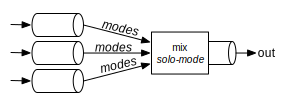

Intro to Clojure
Table of Contents
- Intro to Clojure topic1
- Overview of the Course topic2
- Clojure Overview & REPL topic1
- LAB: Exploring the REPL topic1
- Functions topic1
- LAB: Functions topic1
- Flow Control topic1
- LAB: Flow Control topic1
- Collections as Containers topic1
- Collections as Indexes topic1
- LAB: Collections topic1
- Collections as Structured Data topic1
- LAB: Structured Data topic1
- Sequences topic1
- LAB: Sums and Ciphers topic1
- Intermediate Topics
- Optional Topics
- The End
Copyright © 2014 Cognitect, Inc. All rights reserved. Not for distribution.
This HTML document contains both lecture slides and lab exercises. Press T to toggle slide-show mode. The lab exercises are not visible in slide-show mode.
Intro to Clojure topic1
Overview of the Course topic2
Intro Topics
- Clojure Overview & REPL
- Functions
- Flow Control
- Collections
- Sequences
Intermediate Topics
- Transducers
- Polymorphism
- Concurrency
- Names and Namespaces
- Macros
Optional Topics
- Testing
- Life on the JVM
- core.async
- Web Development
Clojure Overview & REPL topic1
Clojure Objectives
- Lisp: small core, code-as-data, abstraction
- Functional, emphasis on immutability
- Support concurrency & managed state
- Expose and embrace host platforms
Why Another Lisp?
- Limits to change post standardization
- Core data structures mutable, not extensible
- No concurrency in specs
- Standard Lisps are their own platforms
- Already have ABCL, Kawa, and more on the JVM
- Impedance mismatch with the JVM as host platform
Why the JVM?
- VM, not OS, is target platform of the future
- Type system
- Dynamic enforcement and safety
- Garbage collection
- Libraries
- Bytecode, just-in-time compilation
Why ClojureScript?
- JavaScript has reach
- Web browsers
- Mobile devices
- Databases, PDF, etc.
- JavaScript VMs getting faster
- Clojure is simpler, more powerful, & more robust than JS
Clojure and ClojureScript
- This course will focus on Clojure
- Code with no interop calls mostly works in both
- Host platforms are different
- Interop calls
- Native types (strings, numbers)
- Can exchange serialized data with both
Basic Syntax and the REPL topic2
Literals
42 ; Long 6.022e23 ; Double 42N ; BigInt 1.0M ; BigDecimal 22/7 ; Ratio "hello" ; String \e ; Character #"[0-9]" ; Regular Expression
Instructor Notes notes
- Comments start with a semicolon and go to the end of the line
Literals
true false ; Booleans nil ; null call-me + Fred *bob* ; Symbols :alpha :beta ::my-keyword ; Keywords
Literals in the REPL
user=> 42 ; Read ; Eval 42 ; Print user=> ; Loop
Expressions in the REPL
user=> (+ 3 4) ; Read ; Eval 7 ; Print user=> ; Loop
Binding Names With def
user=> pi ; Not defined yet!! CompilerException java.lang.RuntimeException: Unable to resolve symbol: pi in this context ... user=> (def pi 3.14159) #'user/pi user=> pi 3.14159
Hello, World!
user=> (println "Hello, World!") Hello, World! ; printed output nil ; return value
- REPL always shows return value
- Printing is a side effect, returns
nil
REPL Memory
user=> (+ 3 4) 7 user=> (+ 10 *1) ; *1 is most recent return value 17 user=> (+ 100 *2) ; *2 is next most recent 107
Instructor Notes notes
- Our examples use these conventions:
;;before printed output;;=>before return values
Variants on Printing
| Human-Readable | Machine-Readable | |
|---|---|---|
| With newline | println |
prn |
| Without newline | print |
pr |
user=> (println "one\ntwo") one two nil user=> (prn "one\ntwo") "one\ntwo" ; quoted string, escaped newline nil
Evaluation and Data topic2
Traditional Evaluation
Clojure Evaluation
Data Structures
(4 :alpha 3.0) ; List [2 "hello" 99] ; Vector {:a 1, :b 2} ; Map #{alice jim bob} ; Set
- Note: commas are whitespace
Structure vs. Semantics
Operation Forms
(op ... )
opis "function position," can be any of:- Function:
+,mod,println - Macro:
when,cond,and - Special operator:
do,if,def - An expression which yields a function
- More generally, something invocable (
clojure.lang.IFn)
- Function:
Function Calls Always Use Parens
(defn hello [] "Hello, world!") ; hello is a function hello ; return the function ;;=> #<user$hello user$hello@bda96b> (hello) ; invoke the function ;;=> "Hello, world!"
Values Never Use Parens
(def my-name "Kelly Q. Programmer") ; my-name is a value my-name ; return the value ;;=> "Kelly Q. Programmer" (my-name) ; invoke the value ;; ClassCastException java.lang.String cannot be cast to clojure.lang.IFn
Quote: Preventing Evaluation
(def x 3) ;;=> #'user/x (+ x 2) ;;=> 5 (quote (+ x 2)) ; quoted list ;;=> (+ x 2) ; returns list, unevaluated '(+ x 2) ; same as above ;;=> (+ x 2)
Quote: Preventing Evaluation
(1 2 3) ;; ClassCastException java.lang.Long cannot ;; be cast to clojure.lang.IFn '(1 2 3) ;;=> (1 2 3)
Discovering the Environment topic2
doc
user=> (use 'clojure.repl) ; quoted symbol user=> (doc when) ;; ------------------------- ;; clojure.core/when ;; ([test & body]) ;; Macro ;; Evaluates test. If logical true, evaluates ;; body in an implicit do. ;;=> nil
find-doc
user=> (find-doc "sequence") ;; ... all definitions with "sequence" ;; in their documentation ... ;;=> nil
apropos
user=> (apropos "map") ;;=> (clojure.core/Throwable->map clojure.core/amap clojure.core/array-map ;; clojure.core/hash-map clojure.core/map clojure.core/map-entry? ;; clojure.core/map-indexed clojure.core/map? clojure.core/mapcat ;; clojure.core/mapv clojure.core/ns-map clojure.core/ns-unmap ;; clojure.core/pmap clojure.core/proxy-mappings clojure.core/sorted-map ;; clojure.core/sorted-map-by clojure.core/struct-map clojure.core/zipmap)
source
user=> (source not) ;; (defn not ;; "Returns true if x is logical false, false otherwise." ;; {:tag Boolean ;; :added "1.0" ;; :static true} ;; [x] (if x false true)) ;;=> nil
dir
user=> (dir clojure.repl) ;; apropos ;; demunge ;; dir ;; dir-fn ;; doc ;; find-doc ;; pst ;; root-cause ;; set-break-handler! ;; source ;; source-fn ;; stack-element-str ;; thread-stopper ;;=> nil
Cheat Sheet
- http://clojure.org/api/cheatsheet
cheatsheet.pdfin supplied files
Project Management topic2
Leiningen
- pronounced "LINE-ing-en"
- leiningen.org
lein new ${NAME} # Generate a new project
lein repl # Start a REPL
lein run -m foo/main # Execute function foo/main
lein version # Show version
lein help # Show available commands
Leiningen 2 Project
| Path | Purpose |
|---|---|
project.clj |
Project/build config |
src/ |
Clojure sources |
test/ |
Clojure unit tests |
resources/ |
Non-code project files |
resources/public/ |
HTML/CSS/JS files for web (convention) |
target/classes/ |
Compiled bytecode |
- Cached dependencies stored in
$HOME/.m2/repository/
Leiningen project.clj
(defproject my-project "0.1.0-SNAPSHOT" :description "This is the best project ever" :dependencies [[org.clojure/clojure "1.8.0"] [org.clojure/math.combinatorics "0.1.1"]])
Leiningen Dependencies
- Vector of symbol and version string
;; group ID artifact ID version ;; ----------- ------------------ ------- [ org.clojure/math.combinatorics "0.1.1" ] ;; Same group & artifact ID version ;; ------------------------ ------- [ compojure "1.5.0" ]
Finding Dependencies
- Clojure-contrib: http://dev.clojure.org/display/doc/Clojure+Contrib+Libraries
- Clojars.org: Clojure community libraries
- search.maven.org: most open-source Java libraries
LAB: Exploring the REPL topic1
Simple Arithmetic
Using the REPL, compute the sum of 7654 and 1234.
Solution fold
(+ 7654 1234)
;;=> 8888
Order of Operations
Rewrite the following arithmetic expression as a Clojure expression and evaluate it at the REPL:
( 7 + 3 * 4 + 5 ) / 10
Solution fold
(/ (+ 7 (* 3 4) 5) 10)
;;=> 12/5
Notes fold
- Clojure does not need an operator precedence table
- Division of integers returns a ratio
Finding Documentation by Name
Using REPL documentation functions, find the documentation for the rem and mod functions. Evaluate some expressions that demonstrate the difference between these two functions.
Solution fold
(use 'clojure.repl) (doc mod) (doc rem)
(rem 10 -8)
;;=> 2
(mod 10 -8)
;;=> -6
Discovering Exceptions
Using find-doc, find the function that prints the stack trace of the most recent REPL exception.
Solution fold
(find-doc "stack trace") ;; ------------------------- ;; clojure.repl/pst ;; ([] [e-or-depth] [e depth]) ;; Prints a stack trace of the exception, to the ;; depth requested. If none supplied, uses the root ;; cause of the most recent repl exception (*e), ;; and a depth of 12.
Creating & Viewing Exceptions
Evaluate an expression that throws an exception. Then print the stack trace of that exception.
Solution fold
(/ 1 0) ;; ArithmeticException Divide by zero ;; clojure.lang.Numbers.divide (Numbers.java:156) (pst) ;; ArithmeticException Divide by zero ;; clojure.lang.Numbers.divide (Numbers.java:156) ;; clojure.lang.Numbers.divide (Numbers.java:3677) ;; user/eval15 (NO_SOURCE_FILE:4) ;; ...
Functions topic1
Motivation
- Clojure is a functional language
- Functions are a first-class abstraction
- Can be stored, passed as arguments, invoked
- Ubiquitous support for high-order functions
- Core code (almost) entirely pure functions
- i.e., no side-effects
- The obvious place to start…
Creating Functions topic2
defn
defndefines a named function
;; name params body ;; ----- ------ ------------------- (defn greet [name] (str "Hello, " name) )
- Invoke with the name in "function position"
(greet "students") ;;=> "Hello, students"
Multi-arity functions
- Can overload function by arity (number of arguments)
- Each arity is a list
([args*] body*) - One arity can invoke another
(defn messenger ([] ; no args (messenger "Hello world!")) ; call self with default ([msg] ; one arg (println msg))) ; print it (messenger) ;; Hello world! (messenger "Hello class!") ;; Hello class!
Variadic Functions
- Variadic: any number of arguments
- Specified by
&symbol in params- Next param collects all remaining arguments
- Collected arguments represented as sequence
(defn messenger [greeting & who] (println greeting who)) (messenger "Hello" "world" "class") ;; Hello (world class)
Instructor Notes notes
- Sequences look and behave like lists
Anonymous Functions
fncreates anonymous function with no name
;; params body ;; --------- --------------- (fn [message] (println message) )
Invoking Anonymous Functions
(op ...)- Invoke a function with
fnitself in function position
;; operation (function) argument ;; -------------------------------- -------------- ( (fn [message] (println message)) "Hello world!" ) ;; Hello world!
Instructor notes notes
- Extra whitespace to show structure
defn and fn
(defn greet [name] (str "Hello, " name)) ;; is just a shortcut for (def greet (fn [name] (str "Hello, " name)))
Function Reader Macro
- Terse form
#()for short functions defined inline- Single argument:
% - Multiple arguments:
%1,%2,%3, … - Variadic:
%&for remaining arguments
- Single argument:
- Can't nest
;; A function to add 6 to arg: #(+ 6 %) ;; Equivalent to: (fn [x] (+ 6 x))
Function Reader Macro
;; Wrong way to make a vector: #([%]) ;; Because it expands to: (fn [x] ([x])) ;; Which tries to invoke the vector. ;; What you really wanted: (fn [x] [x])
Applying Functions topic2
apply
- Invokes function on arguments
- Final argument is a sequence
- "Unpacks" remaining arguments from a sequence
(f 1 2 3 4) ;; this calls f with args 1 2 3 4 (apply f '(1 2 3 4)) ;; so does this (apply f 1 '(2 3 4)) ;; and so does this (apply f 1 2 '(3 4)) ;; and so does this
apply and Variadics
;; & puts rest of args into sequence (defn messenger [greeting & who] ;; apply gets args from sequence (apply println greeting who)) (messenger "Hello" "world" "class") ;; Hello world class
Instructor Notes notes
- Similar to
*splatin Ruby
Partial Application
Sometimes we want to "bake in" one or more arguments to a new function call:
(defn x10 [& nums] (apply * 10 nums))
partial
partial- partially applies a function f with a subset of the args- returns a new function that takes the remaining args and invokes with apply
(* 10 5) ;; 50 (def x10 (partial * 10)) (x10 5) ;; 50
Locals and Closures topic2
let
letbinds symbols to immutable values- Values may be literals or expressions
- Bound symbols are available in lexical scope
;; bindings code that uses name ;; ------------ ------------------- (let [name value] ... )
let Example
(defn messenger [msg] (let [a 7 b 5 c (capitalize msg)] (println a b c) ) ; end of 'let' scope ) ; end of function
Instructor Notes notes
- Extra whitespace to show structure
Closures
fncreates a closure- "closes" over surrounding lexical scope
- Closed-over locals persist beyond lexical scope
(defn messenger-builder [greeting] (fn [who] (println greeting who))) ; closes over greeting ;; greeting provided here, then goes out of scope (def hello-er (messenger-builder "Hello")) ;; greeting still available because hello-er is closure (hello-er "world!") ;; Hello world!
Java Interop topic2
Invoking Java Code
| Task | Java | Clojure |
|---|---|---|
| Instantiation | new Widget("foo") |
(Widget. "foo") |
| Instance method | rnd.nextInt() |
(.nextInt rnd) |
| Instance field | object.field |
(.-field object) |
| Static method | Math.sqrt(25) |
(Math/sqrt 25) |
| Static field | Math.PI |
Math/PI |
- Note:
(.-field obj)syntax added in Clojure 1.4- Previously was
(.field obj)- still works with either
- Previously was
Java Methods vs Functions
- Java methods are not Clojure functions
- Can't store them, pass them as arguments
- Can wrap them in functions when necessary
;; make a function to invoke .length on arg (fn [obj] (.length obj)) ;; same thing #(.length %)
LAB: Functions topic1
Defining a function
Define a function greet that takes no arguments and prints "Hello".
Solution fold
(defn greet [] (println "Hello"))
Different ways to define functions
Redefine greet using def, first with the fn special form and then with the #() reader macro.
Solution fold
(def greet (fn [] (println "Hello"))) (def greet #(println "Hello"))
Arities with defaults
Define a function greeting which:
- Given no arguments, returns "Hello, World!"
- Given one argument x, returns "Hello, x!"
- Given two arguments x and y, returns "x, y!"
Hint: use the str function to concatenate strings.
Solution fold
(defn greeting ([] (greeting "Hello" "World")) ([x] (greeting "Hello" x)) ([x y] (str x ", " y "!")))
Tests fold
(assert (= "Hello, World!" (greeting))) (assert (= "Hello, Clojure!" (greeting "Clojure"))) (assert (= "Good morning, Clojure!" (greeting "Good morning" "Clojure")))
Do nothing
Define a function do-nothing which takes a single argument x and returns it, unchanged.
Solution fold
(defn do-nothing [x] x)
Notes fold
In Clojure, this is the identity function.
By itself, identity is not very useful, but it can be helpful when working with higher-order functions.
(defn identity "Returns its argument." [x] x)
Do one thing well
Define a function always-thing which takes any number of arguments, ignores all of them, and returns the keyword :thing.
Solution fold
(defn always-thing [& args] :thing)
Do many things
Define a function make-thingy which takes a single argument x. It should return another function which takes any number of arguments and always returns x.
Solution fold
(defn make-thingy [x] (fn [& args] x))
Tests fold
(let [n (rand-int Integer/MAX_VALUE) f (make-thingy n)] (assert (= n (f))) (assert (= n (f :foo))) (assert (= n (apply f :foo (range)))))
Notes fold
In Clojure, this is the constantly function.
(defn constantly "Returns a function that takes any number of arguments and returns x." [x] (fn [& args] x))
In triplicate
Define a function triplicate which takes another function and calls it three times, without any arguments.
Solution fold
(defn triplicate [f] (f) (f) (f))
Do the opposite
Define a function opposite which takes a single argument f. It should return another function which takes any number of arguments, applies f on them, and then calls not on the result.
The not function in Clojure does logical negation.
Solution fold
(defn opposite [f] (fn [& args] (not (apply f args))))
Notes fold
In Clojure, this is the complement function.
(defn complement "Takes a fn f and returns a fn that takes the same arguments as f, has the same effects, if any, and returns the opposite truth value." [f] (fn ([] (not (f))) ([x] (not (f x))) ([x y] (not (f x y))) ([x y & zs] (not (apply f x y zs)))))
Many functions in clojure.core have multiple arities as a performance optimization.
In triplicate redux
Define a function triplicate2 which takes another function and any number of arguments, then calls that function three times on those arguments. Re-use the function you defined in the earlier "Triplicate" exercise.
Solution fold
(defn triplicate2 [f & args] (triplicate (fn [] (apply f args))))
Squaring the circle
Using the java.lang.Math class, demonstrate the following mathematical facts:
- The cosine of Pi is -1
- For some x, sin(x) ^ 2 + cos(x) ^ 2 = 1
Solution fold
(Math/cos Math/PI)
;;=> -1.0
(+ (Math/pow (Math/sin Math/PI) 2) (Math/pow (Math/cos Math/PI) 2))
;;=> 1.0
Go fetch
Define a function that takes an HTTP URL as a string, fetches that URL from the web, and returns the content as a string.
Hint: Using the java.net.URL class and its openStream method. Then use the Clojure slurp function to get the content as a string.
Solution fold
(defn http-get [url] (slurp (.openStream (java.net.URL. url))))
Tests fold
(assert (.contains (http-get "http://www.w3.org/") "html"))
Notes fold
In fact, the Clojure slurp function is all that is needed, because it interprets its argument as a URL first and, failing that, as a file name.
Getting into the Swing of things
Translate the following Java code into a single Clojure function sample-app. Don't worry if you aren't familiar with the Java Swing API: the point is to practice using interop forms.
import javax.swing.JButton;
import javax.swing.JFrame;
import javax.swing.JLabel;
import javax.swing.JPanel;
public class SampleApp {
public static void main(String[] args) {
JPanel panel = new JPanel();
panel.setOpaque(true);
JLabel label = new JLabel("Click the button!");
panel.add(label);
JButton button = new JButton("Go");
panel.add(button);
JFrame frame = new JFrame("Sample Application");
frame.setContentPane(panel);
frame.setSize(300, 100);
frame.setVisible(true);
}
}
Solution fold
(import (javax.swing JLabel JButton JPanel JFrame)) (defn sample-app [] (let [label (JLabel. "Click the button!") button (JButton. "Go") panel (JPanel.) frame (JFrame. "Sample Application")] (.setOpaque panel true) (.add panel label) (.add panel button) (.setContentPane frame panel) (.setSize frame 300 100) (.setVisible frame true)))
Bonus Questions
Partial Function Application
Define a function one-less-arg that takes two arguments:
f, a functionx, a value
It returns another function which calls f on x plus any additional arguments.
Solution fold
(defn one-less-arg [f x] (fn [& args] (apply f x args)))
Notes fold
In Clojure, the partial function is a more general version of this.
(defn partial "Takes a function f and fewer than the normal arguments to f, and returns a fn that takes a variable number of additional args. When called, the returned function calls f with args + additional args." ([f arg1] (fn [& args] (apply f arg1 args))) ([f arg1 arg2] (fn [& args] (apply f arg1 arg2 args))) ([f arg1 arg2 arg3] (fn [& args] (apply f arg1 arg2 arg3 args))) ([f arg1 arg2 arg3 & more] (fn [& args] (apply f arg1 arg2 arg3 (concat more args)))))
Function Composition
Define a function two-fns which takes two functions as arguments, f and g.
It returns another function which takes one argument, calls g on it, then calls f on the result, and returns that.
That is, your function returns the composition of f and g.
Solution fold
(defn two-fns [f g] (fn [x] (f (g x))))
Notes fold
In Clojure, the comp (for "composition") function is a more general version of this.
(defn comp "Takes a set of functions and returns a fn that is the composition of those fns. The returned fn takes a variable number of args, applies the rightmost of fns to the args, the next fn (right-to-left) to the result, etc." ([] identity) ([f] f) ([f g] (fn ([] (f (g))) ([x] (f (g x))) ([x y] (f (g x y))) ([x y z] (f (g x y z))) ([x y z & args] (f (apply g x y z args))))) ([f g h] (fn ([] (f (g (h)))) ([x] (f (g (h x)))) ([x y] (f (g (h x y)))) ([x y z] (f (g (h x y z)))) ([x y z & args] (f (g (apply h x y z args)))))) ([f1 f2 f3 & fs] (let [fs (reverse (list* f1 f2 f3 fs))] (fn [& args] (loop [ret (apply (first fs) args) fs (next fs)] (if fs (recur ((first fs) ret) (next fs)) ret))))))
Don't worry about understanding the implementation of comp just yet.
Let over Lambda
Rewrite the following expression using fn instead of let.
(let [x 5 y 7] (+ x y))
Solution fold
((fn [x y] (+ x y)) 5 7)
Notes fold
The let special form is functionally equivalent to creating and invoking an anonymous function, but it is easier to read and more efficient.
Lots of Swinging to do
Rewrite your solution to the "Getting into the Swing of things" exercise without using let.
Hint: use Clojure's doto macro.
Solution fold
(import (javax.swing JLabel JButton JPanel JFrame)) (defn sample-app [] (doto (JFrame. "Sample Application") (.setContentPane (doto (JPanel.) (.setOpaque true) (.add (JLabel. "Click the button!")) (.add (JButton. "Go")))) (.setSize 300 100) (.setVisible true)))
Flow Control topic1
Introduction
Statements vs. Expressions in Java
- Expressions return values, statements do not
// "if" is a statement because it doesn't return a value: String s; if (x > 10) { s = "greater"; } else { s = "greater or equal"; } obj.someMethod(s); // Ternary operator is an expression; it returns a value: obj.someMethod(x > 10 ? "greater" : "greater or equal");
Expressions in Clojure
- Everything in Clojure is an expression
- Always returns a value
- A block of multiple expressions returns the last value
- E.g.,
let,do,fn
- E.g.,
- Expressions exclusively for side-effects return
nil
Flow Control Expressions
- Flow control operators are expressions too
- Composable, can use them anywhere
- Less duplicate code
- Fewer intermediate variables
- Extensible, via macros
- E.g.,
when-let
- E.g.,
if
(even? 2) ;;=> true (if (even? 2) "even" "odd") ;;=> "even" (str "2 is " (if (even? 2) "even" "odd")) ;;=> "2 is even" ; else-expression is optional (if (true? false) "impossible!") ;;=> nil
Truthiness
(if true :truthy :falsey) ;;=> :truthy (if (Object.) :truthy :falsey) ; objects are true ;;=> :truthy (if [] :truthy :falsey) ; empty collections are true ;;=> :truthy (if 0 :truthy :falsey) ; zero is true ;;=> :truthy (if false :truthy :falsey) ;;=> :falsey (if nil :truthy :falsey) ; nil is false ;;=> :falsey (if (seq []) :truthy :falsey) ; seq on empty coll is nil ;;=> :falsey
if and do
- Multiple expressions per branch
- Last value in branch returned
(if (even? 5) (do (println "even") true) (do (println "odd") false)) ;; odd ; printed ;;=> false ; return value
when
- If condition is true, execute body
- Otherwise, return
nil - Shortcut for
(if test (do body))with no "else"
(when condition
... body of expressions ...)
cond
- Series of tests and expressions
:elseexpression is optional- Could be any truthy value,
:elseis standard
- Could be any truthy value,
- Returns
nilif no match and no:else
(cond test1 expression1 test2 expression2 ... :else else-expression)
cond
(let [x 5] (cond (< x 2) "x is less than 2" (< x 10) "x is less than 10")) ;;=> "x is less than 10"
cond and :else
(let [x 11] (cond (< x 2) "x is less than 2" (< x 10) "x is less than 10" :else "x is greater than or equal to 10")) ;;=> "x is greater than or equal to 10"
case
- Compare argument to test values in O(1) time
- Test values must be compile-time literals (e.g. numbers, strings, keywords)
- Error if no match
(defn foo [x] (case x 5 "x is 5" 10 "x is 10")) (foo 10) ;;=> "x is 10" (foo 11) ;; ERROR
case with else-expression
- With an odd number of expressions…
- The last expression is the "else"
- Prevents error on no match
(defn foo [x] (case x 5 "x is 5" 10 "x is 10" "x isn't 5 or 10")) (foo 5) ;;=> "x is 5" (foo 11) ;;=> "x isn't 5 or 10"
Iteration for Side Effects topic2
dotimes
- Evaluate expression n times
- Returns
nil
(dotimes [i 3] (println i)) ;; 0 ;; 1 ;; 2 ;;=> nil
doseq
- Iterates over a sequence
- Similar to Java's for-each loop
- If a lazy sequence,
doseqforces evaluation - Returns
nil
(doseq [n (range 3)] (println n)) ;; 0 ;; 1 ;; 2 ;;=> nil
doseq with multiple bindings
- Similar to nested foreach loops
- Processes all permutations of sequence content
- Returns
nil
(doseq [letter [:a :b] number (range 3)] ; list of 0,1,2 (pr [letter number])) ;; [:a 0][:a 1][:a 2][:b 0][:b 1][:b 2]=> nil
Clojure's for
- List comprehension, NOT a for-loop
- Generator function for sequence permutation
- Bindings behave like
doseq
(for [letter [:a :b] number (range 3)] ; list of 0,1,2 [letter number]) ;;=> ([:a 0] [:a 1] [:a 2] [:b 0] [:b 1] [:b 2])
Recursion topic2
Recursion and Iteration
- Clojure provides
recurand the sequence abstraction recuris "classic" recursion- Closed to consumers, lower-level
- Sequences represent iteration as values
- Consumers can partially iterate
- Reducers and Transducers represent iteration as function composition
- More on Reducers (not covered here): https://clojure.org/reference/reducers
- More on Transducers later
loop and recur
- Functional looping construct
loopdefines bindingsrecurre-executesloopwith new bindings
- Prefer higher-order library fns
(loop [i 0] (if (< i 10) (recur (inc i)) i)) ;=> 10
defn and recur
- fn arguments are implicit
loopbindings
(defn increase [i] (if (< i 10) (recur (inc i)) i)) (increase 1) ;=> 10
recur for recursion
recurmust be in "tail position"- The last expression in a branch
recurmust provide values for all bound symbols by position- Loop bindings
- defn/fn args
- Recursion via
recurdoes not consume stack
Exceptions topic2
Exception handling
- try/catch/finally as in Java
(try (/ 2 1) (catch ArithmeticException e "divide by zero") (finally (println "cleanup"))) ;; cleanup ;;=> 2
Throwing exceptions
(try (throw (Exception. "something went wrong")) (catch Exception e (.getMessage e))) ;;=> "something went wrong"
Exceptions with Clojure data
ex-infotakes a message and a mapex-datagets the map back out- Or
nilif not created withex-info
- Or
(try (throw (ex-info "There was a problem" {:detail 42})) (catch Exception e (prn (:detail (ex-data e))))) ;; 42 ;;=> nil
with-open
(let [f (clojure.java.io/writer "/tmp/new")] (try (.write f "some text") (finally (.close f)))) ;; Can be written: (with-open [f (clojure.java.io/writer "/tmp/new")] (.write f "some text"))
LAB: Flow Control topic1
I am thinking of a number
Let's play a number-guessing game. Define a function check-guess that takes two arguments:
secret, the number the player is trying to guessguess, the player's most recent guess
The function should return a string:
- "You win!" if the numbers are equal
- "Too low" if the guess is less than the secret
- "Too high" if the guess is greater than the secret
Use only if, not cond.
Solution fold
(defn check-guess [secret guess] (if (= guess secret) "You win!" (if (< guess secret) "Too low" "Too high")))
I am thinking of another number
Repeat the previous exercise using cond instead of if.
Solution fold
(defn check-guess [secret guess] (cond (= guess secret) "You win!" (< guess secret) "Too low" :else "Too high"))
Triplicate redux
Define a function triplicate that takes a single argument, a function f, and calls that function three times. Use dotimes.
Test it with an anonymous function that prints :hi.
Solution fold
(defn triplicate [f] (dotimes [i 3] (f)))
(triplicate #(prn :hi))
Printing Numbers
Define a function numbers that takes a single argument n and prints all the numbers from zero to n-1 (inclusive), one per line.
Solution fold
(defn numbers [n] (dotimes [i n] (println i)))
Counting Numbers
Define a function counting that takes a single argument n and prints all the numbers from one to n (inclusive), one per line.
Hint: Use doseq and range.
Solution fold
(defn counting [n] (doseq [i (range 1 (inc n))] (println i)))
Garage band
Let's start a band! Define a function print-bands that takes three arguments:
guitars, a vector of guitarists' namesbasses, a vector of bass players' namesdrums, a vector of drummers' names
The function should print all the possible 3-piece combinations you can make with those players, like this:
(print-bands ["Gary" "Gus"] ["Bill" "Bob" "Buster"] ["Darrell"]) ;; Gary Bill Darrell ;; Gary Bob Darrell ;; Gary Buster Darrell ;; Gus Bill Darrell ;; Gus Bob Darrell ;; Gus Buster Darrell
Solution fold
(defn print-bands [guitars basses drums] (doseq [g guitars b basses d drums] (println g b d)))
Return of the garage band
Define a function all-bands that takes the same arguments as print-bands, but instead of printing all the combinations it returns them in a sequence. Each item in the sequence should be a vector like [guitarist bass drummer].
Hint: use for
Solution fold
(defn all-bands [guitars basses drums] (for [g guitars b basses d drums] [g b d]))
Fizzbuzz
It's everybody's favorite programming problem! Define a function fizzbuzz that prints the numbers from 1 to 100 (inclusive), subject to the following rules:
- If the number is a multiple of three, print "Fizz".
- If the number is a multiple of five, print "Buzz".
- If the number is a multiple of both three and five print "FizzBuzz".
- If the number is not a multiple of three or five, print the number.
Hint: the rem function (short for "remainder") computes the remainder of dividing two numbers, like Java's % operator. Clojure also has a zero? function to test if a number is equal to zero.
Solution fold
There are infinitely many solutions to this problem. Here is the most straightforward. Remember that conditional expressions such as cond return a value.
(defn fizzbuzz [] (doseq [i (range 1 101)] (println (cond (and (zero? (rem i 3)) (zero? (rem i 5))) "FizzBuzz" (zero? (rem i 3)) "Fizz" (zero? (rem i 5)) "Buzz" :else i))))
If you want to avoid repeating the rem operation, here's one way to do it:
(defn fizzbuzz [] (doseq [i (range 1 101)] (let [fizz (if (zero? (rem i 3)) "Fizz") buzz (if (zero? (rem i 5)) "Buzz") number (if (not (or fizz buzz)) i)] (println (str fizz buzz number)))))
Euclid's Algorithm
Euclid's Algorithm finds the greatest common divisor of two integers using only subtraction. In imperative pseudo-code, it looks like this:
function gcd(A, B):
do loop:
if A == 0
return B
if B == 0
return A
if A > B
A := A - B
else
B := B - A
Define a function gcd that implements Euclid's algorithm. Use recur.
Solution fold
(defn gcd [a b] (cond (zero? a) b (zero? b) a (> a b) (recur (- a b) b) :else (recur a (- b a))))
Some tests:
(assert (= 1 (gcd 3 4))) (assert (= 3 (gcd 3 6))) (assert (= 3 (gcd 6 3))) (assert (= 25 (gcd 100 25))) (assert (= 4 (gcd 100 8))) (assert (= 8 (gcd 16 24)))
Bonus: I am thinking of a number
Define a function which returns another function to play the number-guessing game.
That is, define a function guessing-game that picks a random number and returns a function which takes a single argument, the player's guess. The returned function should return the same strings as in the first exercise.
Hint: Clojure's rand-int function returns a random integer.
Solution fold
(defn guessing-game [] (let [secret (rand-int 100)] (fn [guess] (cond (= guess secret) "You win!" (< guess secret) "Too low" :else "Too high"))))
Bonus: Binary search
Use loop and recur to implement a binary search. Define a function binary-search that takes two arguments:
n, a numbernums, a sorted vector of numbers
The function should return true if nums contains n and false if it does not.
Solution fold
(defn binary-search [n nums] (loop [start 0 end (count nums)] (if (= start end) false (let [index (+ start (int (/ (- end start) 2))) x (nth nums index)] (cond (= n x) true (< n x) (recur start index) :else (recur (inc index) end))))))
And some tests:
(assert (false? (binary-search 4 [1 3 5 7 9]))) (assert (false? (binary-search 11 [1 3 5 7 9]))) (assert (true? (binary-search 7 [1 3 5 7 9]))) (assert (true? (binary-search 1 [1 3 5 7 9]))) (assert (true? (binary-search 9 [1 3 5 7 9]))) (assert (true? (binary-search 54 (range 0 100 2)))) (assert (true? (binary-search 98 (range 0 100 2))))
Collections as Containers topic1
Immutability
- Cannot "overwrite" or "update in-place"
- Never changes unexpectedly
- Simple values (numbers, strings) are immutable
- In Clojure, compound values are immutable too
Data Structures
#{42 "Bob" 98.6 :foo} ; Set
[:alpha "beta" 3.14] ; Vector
(1 2 3 4) ; List
{:pi 3.14159, "pie" 3} ; Map
"It is better to have 100 functions operate on one data structure than to have 10 functions operate on 10 data structures." -Alan Perlis
Collection Use Cases
- Unordered containers: sets
- Ordered containers: vectors, lists
- Indexed data: maps, vectors
- Structured data: maps, records
Collections as Containers
- You need to collect many elements
- Usually all the same "type"
- Choose collection type by the operations it supports efficiently
- Set
- Vector
- List
Common Functions for Collections
count - size of collection conj - "conjoin" (add) a new value into - pour one collection into another ;; Only for vectors and lists: peek - retrieve the value at the insertion point pop - remove the value at the insertion point ;; Only for sets: disj - "disjoin" (remove) a value contains? - does this collection contain this key? clojure.set/union - set union clojure.set/intersection - set intersection
Set
(def players #{"Alice" "Bob" "Kelly"})
- No order (but sorted sets are available)
- No duplicates
Uses for a Set
- You just need a collection of stuff
- You don't care about order
- You need to efficiently check if something is in the collection
- You need to efficiently add or remove any item
Add to a Set
players
;;=> #{"Alice" "Bob" "Kelly"}
(conj players "Una")
;;=> #{"Alice" "Una" "Bob" "Kelly"}
Note original remains unchanged:
players
;;=> #{"Alice" "Bob" "Kelly"}
Add Multiple Things to a Set
players
;;=> #{"Alice" "Bob" "Kelly"}
(conj players "Sal" "Evan" "Bob")
;;=> #{"Alice" "Bob" "Evan" "Sal" "Kelly"}
Note: "Bob" was already in the set, so no effect.
Remove from a Set
players
;;=> #{"Alice" "Bob" "Kelly"}
(disj players "Bob" "Sal")
;;=> #{"Alice" "Kelly"}
Note: "Sal" wasn't in the set, so no effect.
Find if Set Contains Item
players
;;=> #{"Alice" "Bob" "Kelly"}
(contains? players "Kelly")
;;=> true
(contains? players "Samwise")
;;=> false
Note: contains? doesn't work on vectors or lists.
Sets are Functions
(def s #{3 7 9}) ;; Returns the element if it's in the set: (s 7) ;;=> 7 ;; Returns nil otherwise: (s 20) ;;=> nil
Sorted Sets
- Preserves "natural" sort order of items
- Uses Clojure's
compare
(conj (sorted-set) "Bravo" "Charlie" "Sigma" "Alpha")
;;=> #{"Alpha" "Bravo" "Charlie" "Sigma"}
Sorted Set with Comparator
Provide your own compare function.
(doc compare)
;; ------------------------- ;; clojure.core/compare ;; ([x y]) ;; Comparator. Returns a negative number, zero, or a positive number ;; when x is logically 'less than', 'equal to', or 'greater than' ;; y. Same as Java x.compareTo(y) except it also works for nil, and ;; compares numbers and collections in a type-independent manner. x ;; must implement Comparable ;;=> nil
(conj (sorted-set-by (fn [x y] (- (compare x y)))) "Bravo" "Charlie" "Sigma" "Alpha")
;;=> #{"Sigma" "Charlie" "Bravo" "Alpha"}
Note: If comparator says 2 elements are equal (it returns zero) then one of them will be removed!
(sorted-set-by (fn [x y] (compare (:age x) (:age y))) {:name "Bob" :age 30} {:name "Kim" :age 30} {:name "Foo" :age 24})
;;=> #{{:age 24, :name "Foo"} {:age 30, :name "Bob"}}
In general, first compare the thing you care about, then compare what's left.
Vector
(def callsigns ["Alfa" "Bravo" "Charlie"])
- Ordered
- Indexed by position
- Grows at the tail (end)
Uses for a Vector
- You need to preserve some order of inputs
- You need efficient access to the nth item
Add to a Vector
callsigns
;;=> ["Alfa" "Bravo" "Charlie"]
(conj callsigns "Delta")
;;=> ["Alfa" "Bravo" "Charlie" "Delta"]
Get Nth Item
- Index starts at zero
callsigns
;;=> ["Alfa" "Bravo" "Charlie"]
(nth callsigns 2) ; get 'third' item
;;=> "Charlie"
Take Apart a Vector
callsigns
;;=> ["Alfa" "Bravo" "Charlie"]
(peek callsigns) ; get last item
;;=> "Charlie"
(pop callsigns) ; everything but last item
;;=> ["Alfa" "Bravo"]
Note: peek on a vector is more efficient than last.
Vectors are Functions
(def v [:a :b :c]) (v 2) ;;=> :c (v 10) ;> ERROR
List
(def cards '(10 :ace :jack 9))
- Must quote in code
- Ordered
- Not indexed
- Just
firstandrest - O(N) access to N'th element
- Just
- Grows at the head (front)
Uses for a List
- You need efficient access to the first element
- You need to efficiently remove ("pop") the first element off the list
- You need to preserve reverse order of inputs ("last in, first out")
- You need to simulate a stack
Add to a List
cards
;;=> (10 :ace :jack 9)
(conj cards :queen)
;;=> (:queen 10 :ace :jack 9)
Examine a List
cards
;;=> (10 :ace :jack 9)
(first cards) ; get first item
;;=> 10
(rest cards) ; everything but first item
;;=> (:ace :jack 9)
Note: peek and pop on a list are the same as first and rest,
respectively.
Adding One Collection to Another
players
;;=> #{"Alice" "Bob" "Kelly"}
(def new-players ["Tim" "Sue" "Grog"]) (into players new-players)
;;=> #{"Alice" "Grog" "Sue" "Bob" "Tim" "Kelly"}
Note: into returns a collection of the same type as its first
argument. Not the same as concat, see lazy sequences.
Destructuring
Destructuring
- Declarative way to pull apart compound data
- vs. explicit, verbose access
- Works for both sequential and associative data structures
- Nests for deep, arbitrary access
Destructuring is Concise
;; Without destructuring: (defn next-fib-pair [pair] [(second pair) (+ (first pair) (second pair))]) ;; With destructuring: (defn next-fib-pair [[a b]] [b (+ a b)])
Sequential Destructuring
- Provide vector of symbols to bind by position
- Binds to
nilif there's no data
- Binds to
(def stuff [7 8 9 10 11]) ;=> #'user/stuff ;; Bind a, b, c to first 3 values in stuff (let [[a b c] stuff] (list (+ a b) (+ b c))) ;;=> (15 17) (let [[a b c d e f] stuff] (list d e f)) ;;=> (10 11 nil)
Sequential Destructuring
- Can get "everything else" with
&- Value is a sequence
(def stuff [7 8 9 10 11]) ;=> #'user/stuff (let [[a & others] stuff] (println a) (println others)) ;; 7 ;; (8 9 10 11)
Where You Can Destructure
- Destructuring works in
fnanddefnparams,letbindings- And anything built on top of them
Performance
Persistent Data Structures
- "Change" always creates new copy
- Old versions remain available
- All Clojure data structures are persistent
- Clojure does this efficiently
- Nothing to do with "persistent storage" on disk
Example: Linked List
Example: Linked List
Example: Binary Tree
Example: Binary Tree
Example: Shared Structure
Choosing a Collection
- Each data structure operation has specific performance guarantees
- Most operations either linear time or constant time
- Choose data structure by operations you need
Linear Time
- O( n ) in size of collection
nthon listslaston anything- Almost anything using sequences
Constant Time
- O(1)
first,rest,peek,popon listsconjon lists
Near-Constant Time
- O(log 32 n)
- Which is really close to O(1)
- And actually is O(1) for n < 1 billion
- Most operations on vectors, sets, & maps
nthon vectors but not on listspeekon vectors but notlast
Summary
| If you need… | Then use… |
|---|---|
| Preserve input order | vector |
| Lookup by index | vector |
| "Does it contain X?" | set |
| Remove item | set |
| Sort order | sorted set |
| Last in, first out | list |
Review
- What function do you use to add an element to a collection?
- What function pours one collection into another?
- What function removes an element from a set?
- What does (contains? #{1 2} 1) return?
- What does (contains? [1 2] 2) return?
- How do you split [1 2 3] into 1 and (2 3)?
Collections as Indexes topic1
Collections as Indexes
- You need to associate one type of stuff with another type of stuff
- "Given an X, find me its Y"
- Make a mapping from X's to Y's
- Use a map
Common Functions for Maps
assoc - associate a new key-value mapping dissoc - dissociate a mapping by key into - pour one map into another reduce - apply a function to each mapping to accumulate result keys - sequence of map's keys vals - sequence of map's values merge - merge maps together merge-with - merge maps and combine keys with fn update-in - update a value in nested map
Map Example
(def scores {"Una" 1400 "Bob" 1240 "Cid" 1024})
Look Up in a Map
scores
;;=> {"Una" 1400, "Bob" 1240, "Cid" 1024}
(get scores "Cid")
;;=> 1024
Alternative:
(scores "Cid") ; Note: error if scores is nil
;;=> 1024
Look Up with Default
scores
;;=> {"Una" 1400, "Bob" 1240, "Cid" 1024}
(get scores "Samwise" 0)
;;=> 0
Alternative:
(scores "Samwise" 0) ; Note: error if scores is nil
;;=> 0
Maps and Keywords are Functions
(def m {:a 1 :b 2}) ;; Maps are functions of their keys (m :b) ;;=> 2 (m :foo) ;;=> nil (m :foo 50) ;;=> 50 ; default ;; Keywords are functions of maps (:a m) ;;=> 1
Does the Map Contain Item
scores
;;=> {"Una" 1400, "Bob" 1240, "Cid" 1024}
(contains? scores "Una")
;;=> true
(find scores "Una")
;;=> ["Una" 1400]
Note: contains? only works on indexed collections.
- sets, maps
- vectors are indexed, too!
Get Just Keys or Values
scores
;;=> {"Una" 1400, "Bob" 1240, "Cid" 1024}
(keys scores)
;;=> ("Una" "Bob" "Cid")
(vals scores)
;;=> (1400 1240 1024)
Building a Map
players
;;=> #{"Alice" "Bob" "Kelly"}
(zipmap players (repeat 0))
;;=> {"Kelly" 0, "Bob" 0, "Alice" 0}
Alternative:
(into {} (map (fn [player] [player 0]) players))
;;=> {"Alice" 0, "Bob" 0, "Kelly" 0}
Note: this doesn't work:
(into {} (map #([% 0]) players))
;; ArityException Wrong number of args (0) passed to: PersistentVector clojure.lang.AFn.throwArity (AFn.java:437)
Building a Map with reduce
players
;;=> #{"Alice" "Bob" "Kelly"}
(reduce (fn [m player] (assoc m player 0)) {} ; initial value players)
;;=> {"Kelly" 0, "Bob" 0, "Alice" 0}
Combining Maps
(def new-scores {"Cid" 300 "Baz" 900}) (merge scores new-scores)
;;=> {"Una" 1400, "Bob" 1240, "Baz" 900, "Cid" 300}
If both maps contain the same key, second one wins.
Combining Maps with Functions
scores
;;=> {"Una" 1400, "Bob" 1240, "Cid" 1024}
(def new-scores {"Una" 550 "Cid" 900 "Samwise" 1000}) (merge-with + scores new-scores)
;;=> {"Samwise" 1000, "Una" 1950, "Bob" 1240, "Cid" 1924}
If both maps contain the same key, call the function on both values to get the new value.
Sorted Map
- Maintains keys in natural sort order
- Uses Clojure's
compare
(def sm (sorted-map "Bravo" 204 "Alfa" 35 "Sigma" 99 "Charlie" 100)) sm
;;=> {"Alfa" 35, "Bravo" 204, "Charlie" 100, "Sigma" 99}
Keys and Vals of Sorted Map
keys and vals return in sorted order
(keys sm)
;;=> ("Alfa" "Bravo" "Charlie" "Sigma")
(vals sm)
;;=> (35 204 100 99)
Sorted Map with Comparator
Like sorted-set-by
(def smb (sorted-map-by (fn [x y] (- (compare x y))) "Bravo" 204 "Alfa" 35 "Sigma" 99 "Charlie" 100)) smb
;;=> {"Sigma" 99, "Charlie" 100, "Bravo" 204, "Alfa" 35}
Map Destructuring
{ } as left side of binding will initiate map destructuring
- {new :old} - extracts :old from map and binds as new
- {:keys [a]} - extracts :a and binds as a
- {:syms [a b]} - extracts a and binds as a
- {:strs [a b]} - extracts "a" and binds as a
- {:as m} - binds entire map as m
- {:keys [a] :or {a 5}} - extracts :a if found and binds as a, else binds as 5
:keys example
(def stuff {:a 8 :b 9}) (let [{:keys [a b c] :or {c 5} :as m} stuff] (println a b c m)) ;; 8 9 5 {:a 8 :b 9}
Map Destructuring
(def stuff {:a 8 :b 9 :c 10}) (let [{:keys [a b c]} stuff] (println a b c)) ;; 8 9 10
Named Arguments
- Applying vector of keys to
&binding emulates named args
(defn game [planet & {:keys [human-players computer-players]}] (println "Total players: " (+ human-players computer-players))) (game "Mars" :human-players 1 :computer-players 2) ;; Total players: 3
Transients
Fast Accumulation
- Consider rapidly accumulating values into a collection
- Each new value creates a new persistent collection
- What if we could safely use mutation while we were accumulating, then switch back to persistent collections?
- Supported with transient hash-sets, vectors, and hash-maps
Creating Transient Collections
- Create from existing collection with
transient - O(1) time
- Original collection is still immutable
Using Transient Collections
- Transient collection supports "read" methods -
get,nth, etc - Transient collection do not support "write" methods like
conj,assoc, etc - Instead use
conj!,assoc!, etc - Convert back with
persistent!(also O(1))
Transient Example
(defn vrange [n] (loop [i 0 v (transient [])] (if (< i n) (recur (inc i) (conj! v i)) (persistent! v))))
Map
Review
- What are the keys in {:a 1 :b 2 :c 3} ?
- What are all the ways to get 1 from {:a 1}?
Given: (def m {:x 5})
- How do we add a new mapping :y 10 to m?
- How do we get a modified m with :x mapped to 4?
- How do we remove the :x mapping from m?
LAB: Collections topic1
Building Collections
Representing scores in a game
What collection would be best to represent a table of scores (represented by a number) for players (represented by a string) in a game?
Solution fold
This is an index of string to number and is best represented as a map.
{"Una" 1400
"Bob" 1240
"Cid" 1024}
Add a new player to the scores
Given a scores table:
(def scores {"Una" 1400, "Bob" 1240, "Cid" 1024})
write an expression that adds a new player "Mel" to the table.
Solution fold
(assoc scores "Mel" 0)
Representing a player
How would you represent a player with the attributes name and ranking?
Solution fold
There are two reasonable answers: maps and records. A map would look like this:
{:name "Una" :ranking 43}
Given that we have known attributes representing an entity, it's also reasonable to use a record:
;; define the record (defrecord Player [name ranking]) ;; define a player (->Player "Una" 43)
For the rest of this lab, we'll stick with the map representation for players as the examples are easier to read.
Retrieving the a player's ranking
Given either a map or record instance of a player like this:
{:name "Una" :ranking 43}
What are three ways to retrieve the ranking given a player?
Solution fold
Here are three different ways to do a lookup of a keyword key in a map:
(get player :ranking) (player :ranking) (:ranking player)
The last option where the keyword is used as a function is the most common usage.
Modifying Nested Collections
Advance to the next round
A game's state is represented in a data structure like this:
(def game {:round 2 :players #{{:name "Una" :ranking 43} {:name "Bob" :ranking 77} {:name "Cid" :ranking 33}} :scores {"Una" 1400 "Bob" 1240 "Cid" 1024}})
Write a function next-round that takes a game and returns it with
the round incremented.
Note: Clojure has a function update-in that applies a function to a
value in a nested associative structure and returns the updated map:
(update-in {:a {:b 1}} [:a :b] inc) ;;=> {:a {:b 2}}
The [:a :b] vector is a series of keys that are applied from the
root of the map to locate the value that will be passed to the
function.
Solution fold
(defn next-round [game] (update-in game [:round] inc))
Example use:
(next-round game)
;; => {:round 3
;; :players #{{:name "Una" :ranking 43}
;; {:name "Bob" :ranking 77}
;; {:name "Cid" :ranking 33}}
;; :scores {"Una" 1400
;; "Bob" 1240
;; "Cid" 1024}}
Update the scores
Write a function add-score that increments a players score by a
specified amount.
Solution fold
(defn add-score [game name score] (update-in game [:scores name] + score))
Example:
(add-score game "Cid" 500)
;; => {:round 3
;; :players #{{:name "Una" :ranking 43}
;; {:name "Bob" :ranking 77}
;; {:name "Cid" :ranking 33}}
;; :scores {"Una" 1400
;; "Bob" 1240
;; "Cid" 1524}}
Add a new player
Write a function add-player that adds a new player and initializes
their score.
Solution fold
(defn add-player [game name ranking] (update-in (update-in game [:players] conj {:name name :ranking ranking}) [:scores] assoc name 0))
or with the thread-first ->:
(defn add-player [game name ranking] (-> game (update-in [:players] conj {:name name :ranking ranking}) (update-in [:scores] assoc name 0)))
Example:
(add-player game "Mel" 24)
;; => {:round 3
;; :players #{{:name "Una" :ranking 43}
;; {:name "Bob" :ranking 77}
;; {:name "Cid" :ranking 33}
;; {:name "Mel" :ranking 24}}
;; :scores {"Una" 1400
;; "Bob" 1240
;; "Cid" 1524
;; "Mel" 0}}
Index Lookup
Looking up a player
We'd like to be able to look up a player's ranking based on their name. This is currently difficult. What data structure would make this easier?
Solution fold
Currently player information is stored in a set and there is no way to look up a player by name. Alternatively we could index the players by name like we do with scores:
(def game {:round 2 :players {"Una" {:name "Una" :ranking 43} "Bob" {:name "Bob" :ranking 77} "Cid" {:name "Cid" :ranking 33}} :scores {"Una" 1400 "Bob" 1240 "Cid" 1024}})
Since we now have two maps with the same keys, it makes sense to combine them into a single player index:
(def game {:round 2 :players {"Una" {:name "Una" :ranking 43 :score 1400} "Bob" {:name "Bob" :ranking 77 :score 1240} "Cid" {:name "Cid" :ranking 33 :score 1024}}})
Find a player
Using the game definition defined in the prior section, how can we
implement find-player for a game?
Solution fold
(defn find-player [game name] (get-in game [:players name]))
Example:
(find-player game "Una") ;; => {:name "Una", :score 1400, :ranking 43}
Remove a player
Write a function remove-player that removes a player from a game,
including their score.
Solution fold
(defn remove-player [game name] (update-in game [:players] dissoc name))
Collections as Structured Data topic1
Collections as Structured Data
- Small set of named "fields"
- Field names known in advance
- Use a map
- Keys are keywords
- Values are any type
Common Functions for Structured Data
assoc assoc-in dissoc update-in
Structured Data Example
(def person {:first-name "Kelly" :last-name "Keen" :age 32 :occupation "Programmer"})
Get Values Out of Structures
- Use keywords as functions
- When the map represents structured data
- And the keyword is a literal
(:occupation person)
;;=> "Programmer"
Get Values With Default
(pprint person)
;; {:age 32,
;; :last-name "Keen",
;; :first-name "Kelly",
;; :occupation "Programmer"}
;;=> nil
(:favorite-color person "beige")
;;=> "beige"
"Change" a Structure
(pprint (assoc person :occupation "Baker"))
;; {:age 32,
;; :last-name "Keen",
;; :first-name "Kelly",
;; :occupation "Baker"}
;;=> nil
Note: original is unchanged
(pprint person)
;; {:age 32,
;; :last-name "Keen",
;; :first-name "Kelly",
;; :occupation "Programmer"}
;;=> nil
"Remove" a Key
(pprint (dissoc person :age))
;; {:last-name "Keen",
;; :first-name "Kelly",
;; :occupation "Programmer"}
;;=> nil
Nested Structure Example
(def company {:name "WidgetCo" :address {:street "123 Main St" :city "Springfield" :state "IL"}})
Reach Inside Nested Structures
(get-in company [:address :city])
;;=> "Springfield"
Thread-first For Nested Access
- "Thread-first"
- Invoke each step with the prior result as the first argument
(get (get company :address) :city)
- Rewrite as:
(-> company :address :city)
"Change" a Nested Structure
(pprint (assoc-in company [:address :street] "303 Broadway"))
;; {:name "WidgetCo",
;; :address
;; {:state "IL",
;; :city "Springfield",
;; :street "303 Broadway"}}
;;=> nil
Records
- Better performance
- Have named "type"
- Can have polymorphic behavior by implementing protocols
- Usage like maps
- Different way of constructing
- Cannot be invoked like functions
Constructing Records
(defrecord Person [first-name last-name age occupation]) ;; Positional constructor - generated (def kelly (->Person "Kelly" "Keen" 32 "Programmer")) ;; Map constructor - generated (def kelly (map->Person {:first-name "Kelly" :last-name "Keen" :age 32 :occupation "Programmer"}))
Record Literals
#user.Foo{:a 1 :b 2} ; fields by name ;;=> #user.Foo{:a 1, :b 2, :c nil} #user.Foo[1 2 3] ; fields by position ;;=> #user.Foo{:a 1, :b 2, :c 3}
Data Structure Summary
Constructing
Literal Constructor From another collection [1 2] (vector 1 2) (vec '(1 2)) #{1 2} (hash-set 1 2) (set [1 2]) '(1 2) (list 1 2) (list* [1 2]) {:a 1 :b 2} (array-map :a 1 :b 2) (apply array-map [:a 1 :b 2]) (hash-map :a 1 :b 2) (apply hash-map [:a 1 :b 2]) (into {} [[:a 1] [:b 2]]) #user.Foo{:a 1 :b 2} (->Foo 1 2) (map->Foo {:a 1 :b 2})
Using
| Type | Add Item | Get Item | Remove Item |
|---|---|---|---|
| Vector | conj | nth, peek | pop |
| Set | conj | contains? | disj |
| List | conj | first, rest | pop |
| Map | assoc, conj | get | dissoc |
| Nested Maps | assoc-in | get-in | update-in & dissoc |
| Record | assoc | get | dissoc |
LAB: Structured Data topic1
Structured Data
Modeling a Course Catalog
Let's consider how to model a college course catalog. Create record definitions representing the following domain types:
- Course
- course-id (ex: "ECON-101")
- name (ex: "Economics 101")
- prereqs - other course ids that are a prereq
- hours - credit hours this is worth (ex: 3)
- Faculty
- faculty-id (ex: "184826")
- first
- last
- Offering
- offering-id (ex: "123123")
- course - course id
- teacher - faculty id
- days - list of 2-char day of the week (Mo, Tu, …)
- start-time - "9:00am"
- end-time - "10:00am"
Solution fold
(defrecord Course [course-id name prereqs hours]) (defrecord Faculty [faculty-id first last]) (defrecord Offering [offering-id course teacher days start-time end-time])
Course catalog
We'll work with the following example data, each represented as a map, keyed by the id for the entity type.
You can use this to initialize your course catalog data:
(def courses {"CS-101" (->Course "CS-101" "Comp Sci Concepts" nil 2) "CS-110" (->Course "CS-110" "Data Structures" #{"CS-101"} 3) "CS-120" (->Course "CS-120" "Intro to Algorithms" #{"CS-101"} 3) "CS-220" (->Course "CS-220" "Compilers" #{"CS-110" "CS-120"} 4)}) (def faculty {138138 (->Faculty 138138 "John" "Stringbean") 293843 (->Faculty 293843 "Maya" "Mayfair") 234232 (->Faculty 234232 "Emily" "Surcher")}) (def offerings {230203 (->Offering 230203 "CS-101" 138138 ["Mo","We","Fr"] "8:00am" "8:50am") 234109 (->Offering 234109 "CS-110" 293843 ["Mo","We","Fr"] "10:00am" "10:50am") 934934 (->Offering 934934 "CS-120" 138138 ["Tu", "Th"] "1:00pm" "3:00pm")}) (def catalog {:courses courses :faculty faculty :offerings offerings})
Adding a course
Write a function add-course that takes a catalog and a course
instance and returns a new catalog:
Solution fold
(defn add-course [catalog course] (assoc-in catalog [:courses (:course-id course)] course))
Adding a faculty member
Write a function add-faculty that takes a catalog and a
faculty member instance and returns a new catalog:
Solution fold
(defn add-faculty [catalog faculty] (assoc-in catalog [:faculty (:faculty-id faculty)] faculty))
Adding a course offering
Write a function add-offering that adds a new course offering
to the catalog.
Solution fold
(defn add-offering [catalog offering] (assoc-in catalog [:offerings (:offering-id offering)] offering))
Offering to string
Write a function that takes a catalog and offering-id and returns a formatted string as shown:
user> (println (offer->str catalog 934934)) CS-120 Intro to Algorithms (3 hrs) TuTh 1:00pm-3:00pm John Stringbean Prereqs: CS-101
Solution fold
(defn offer->str [catalog offer-id] (let [offering (get-in catalog [:offerings offer-id]) course-id (:course offering) course (get-in catalog [:courses course-id]) faculty (get-in catalog [:faculty (:teacher offering)]) prereqs (:prereqs course) reqstr (if prereqs (clojure.string/join ", " prereqs) "None")] (format "%s %s (%d hrs)\n%s %s-%s %s %s\nPrereqs: %s" course-id (:name course) (:hours course) (:days offering) (:start-time offering) (:end-time offering) (:first faculty) (:last faculty) reqstr))) ;; or a version relying on destructuring: (defn offer->str [catalog offer-id] (let [{:keys [course teacher days start-time end-time]} (get-in catalog [:offerings offer-id]) {:keys [name hours prereqs]} (get-in catalog [:courses course]) {:keys [first last]} (get-in catalog [:faculty teacher]) reqstr (if prereqs (clojure.string/join ", " prereqs) "None")] (format "%s %s (%d hrs)\n%s %s-%s %s %s\nPrereqs: %s" course name hours days start-time end-time first last reqstr)))
Bonus: Faculty course load
Note: This question and the next are best completed with sequence
functions like map, filter, and reduce which we will learn more
about in Sequences.
Write a function faculty-hours that takes a catalog and a
faculty-id and produces a count of the total course credit hours the
faculty member is teaching this semester. Example:
user> (faculty-hours catalog 138138) 5
Solution fold
(defn faculty-hours [catalog faculty-id] (reduce + 0 (map #(:hours (get-in catalog [:courses (:course %)])) (filter #(= faculty-id (:teacher %)) (vals (:offerings catalog))))))
Bonus: Faculty course load report
Write a function using faculty-hours that reports the total number
of credit hours per faculty member for all faculty members as a map
from faculty-id to hours. For example:
user> (faculty-load catalog)
{234232 0, 293843 3, 138138 5}
Solution fold
(defn faculty-load [catalog] (let [ids (keys (:faculty catalog))] (zipmap ids (map #(faculty-hours catalog %) ids))))
Sequences topic1
Sequences Overview topic2
Not Really a Data Structure
But it looks like a list when you print it.
(range 5)
;;=> (0 1 2 3 4)
A list is a sequence (but a sequence is not necessarily a list).
(seq? (list :a :b :c))
;;=> true
A Sequence is a Source of Values
- In some order
- Vector or list: same as collection order
- Map or set: arbitrary, but consistent
- Sorted map or set: in sort order
- Sort of like Java Iterator or Ruby Enumerator
- May be lazy
Partial Computation
- Most sequence functions return another sequence
- Each sequence represents one step in the "job"
- Compose a "stack" of lazy sequence operations
- Consume the result non-lazily
The Sequence Library: Generating topic2
Generating a Sequence of Numbers
(range 10)
;;=> (0 1 2 3 4 5 6 7 8 9)
(range 40 45)
;;=> (40 41 42 43 44)
(range) ;;=> (0 1 2 3 4 ;... forever
Sequence from Data Structure
(seq [1 2 3])
;;=> (1 2 3)
seqgets a sequence from any data structure- Also strings, Java arrays, and Iterable
- Every sequence function calls
seqfor you - You rarely need to call
seq, except to check for empty collection
seq to Check for Empty
seqon empty collection returnsnilnilis logical false
(if (seq "") :not-empty :empty)
;;=> :empty
Sequence from String
(seq "Hello, World!")
;;=> (\H \e \l \l \o \, \space \W \o \r \l \d \!)
(remove #{\a \e \i \o \u} "Hello, World!")
;;=> (\H \l \l \, \space \W \r \l \d \!)
More Sequences
| file-seq | Files in directory |
| line-seq | Lines from java.io.BufferedReader |
| re-seq | Regex matches |
| tree-seq | Generic tree walker |
| resultset-seq | SQL query results |
| xml-seq | XML document nodes |
| enumeration-seq | Java Enumeration |
| iterator-seq | Java Iterator |
The Sequence Library: Operations topic2
Iterating Over a Sequence
(map (fn [n] (long (Math/pow 2 n))) (range 9))
;;=> (1 2 4 8 16 32 64 128 256)
Iterating Over Many Sequences
(map + [100 200 300 400 500] (range 1 999) [10 20 30])
;;=> (111 222 333)
Note: stops at end of shortest sequence.
Iterating with for
(for [n (range 9)] (long (Math/pow 2 n)))
;;=> (1 2 4 8 16 32 64 128 256)
Note: Not an imperative for-loop; lazy like map.
Nested Iteration with for
(for [k [:a :b] n (range 1 4)] [k n])
;;=> ([:a 1] [:a 2] [:a 3] [:b 1] [:b 2] [:b 3])
Note: different from map with multiple sequences.
Shortening Sequences
(take 3 (range)) ;=> (0 1 2) (drop 3 (range)) ;=> (3 4 5 ... infinite (take-while #(< % 5) (range)) ;=> (0 1 2 3 4) (drop-while #(< % 5) (range)) ;=> (5 6 7 8 ... infinite
Taking Out Items
(filter even? (range 10))
;;=> (0 2 4 6 8)
(remove even? (range 10))
;;=> (1 3 5 7 9)
Grouping Elements of a Sequence
(partition 3 (range 10))
;;=> ((0 1 2) (3 4 5) (6 7 8))
(partition-all 3 (range 10))
;;=> ((0 1 2) (3 4 5) (6 7 8) (9))
(group-by (fn [n] (if (even? n) :even :odd)) (range 10))
;;=> {:even [0 2 4 6 8], :odd [1 3 5 7 9]}
Re-Ordering a Sequence
sort
(sort '(10 37 3 10 44 6))
;;=> (3 6 10 10 37 44)
Note: sort is not lazy.
sort with Comparator
(sort (fn [x y] (- (compare x y))) '(10 37 3 10 44 6))
;;=> (44 37 10 10 6 3)
sort-by
;; Note: not a comparator (sort-by :name [{:name "Bob" :age 33} {:name "Ali" :age 39} {:name "Mel" :age 22} {:name "Jim" :age 58}])
;;=> ({:age 39, :name "Ali"} {:age 33, :name "Bob"} {:age 58, :name "Jim"} {:age 22, :name "Mel"})
;; Note: not a comparator (sort-by :age [{:name "Bob" :age 33} {:name "Ali" :age 39} {:name "Mel" :age 22} {:name "Jim" :age 58}])
;;=> ({:age 22, :name "Mel"} {:age 33, :name "Bob"} {:age 39, :name "Ali"} {:age 58, :name "Jim"})
shuffle
(shuffle (range 10))
;;=> [9 3 4 2 6 1 0 5 8 7]
Note: shuffle returns a vector, is not lazy.
reverse
(reverse (range 10))
;;=> (9 8 7 6 5 4 3 2 1 0)
Note: reverse is not lazy.
Flattening Sequences
(mapcat (fn [i] (range i)) (range 7))
;;=> (0 0 1 0 1 2 0 1 2 3 0 1 2 3 4 0 1 2 3 4 5)
(flatten '(1 1 (2 3) (5 8 (13 21))))
;;=> (1 1 2 3 5 8 13 21)
Note: flatten is usually a sign of poorly-constructed sequences.
Prefer mapcat where possible.
Combining Sequences
(concat [:a :b :c] (range 5))
;;=> (:a :b :c 0 1 2 3 4)
Note: Beware lazy "stacks".
Utility Sequences
Typically used in combination with map or reduce.
(repeat :b) ;=> (:b :b :b ... infinite (repeatedly #(rand-int 100)) ;=> (89 58 73 ... infinite (cycle [:a :b :c]) ;=> (:a :b :c :a :b :c :a ... infinite (interpose \, "abc") ;=> (\a \, \b \, \c) (apply str *1) ;=> "a,b,c" (interleave [1 2 3] [:a :b :c]) ;=> (1 :a 2 :b 3 :c) (iterate #(* 2 %) 2) ;=> (2 4 8 16 ... infinite
The Sequence Library: Results topic2
Collecting Result of a Sequence
(vec (filter even? (range 10)))
;;=> [0 2 4 6 8]
(set (map inc (range 10)))
;;=> #{1 2 3 4 5 6 7 8 9 10}
(apply hash-map (range 10))
;;=> {0 1, 2 3, 4 5, 6 7, 8 9}
(apply str (interpose \, (range 4)))
;;=> "0,1,2,3"
Seqs into Collections
(into coll seq)- Adds elements of seq to coll using
conj - "Pours" seq into coll
(into #{} "hello") ;=> #{\e \h \l \o} (into {} [[:x 1] [:y 2]]) ;=> {:x 1, :y 2} (into () [:a :b :c]) ;=> (:c :b :a)
Consuming a Sequence for Side Effects
(doseq [i (range 5)] (prn i))
;; 0 ;; 1 ;; 2 ;; 3 ;; 4 ;;=> nil
Note: doseq always returns nil
doseq Over Many Sequences
Creates nested iteration like for.
(doseq [c [:a :b] i (range 3)] (prn c i))
;; :a 0 ;; :a 1 ;; :a 2 ;; :b 0 ;; :b 1 ;; :b 2 ;;=> nil
reduce
(reduce function init seq)- function takes two arguments
reducecalls(function init (first seq))- Return value becomes init for the next step
- Repeat until the end of the seq, return last init
(reduce (fn [total item] (+ total (* 10 item))) 0 ; init [1 2 3 4]) ;=> 100
reduce
- With no init, uses first element of seq
(reduce + [1 1 2 3 5]) ;=> 12
some
(some function seq)- Maps function over the seq
- Returns first logical true value of function
- Or
nilif nothing true
(some #(zero? (rem % 5)) [9 22 35 76]) ;=> true (some #(= 4 %) [1 3 5]) ;=> nil
some with a Set
- Sets are functions
- Can be used as linear search
(some #{:b} [:a :b :c]) ;=> :b (some #{:foo} [:a :b :c]) ;=> nil
Laziness
- Sequences can be lazy
- Compute results as needed
- Only compute value once, then cached
- Can be infinite!
- Most Clojure functions which return sequences are lazy
Don't Mix Side Effects and Laziness
Chunked sequences lead to confusing results.
(take 4 (map println (range 100)))
;;=> (0 1 2 3 4 5 6 7 8 9 10 11 12 13 14 15 16 17 18 19 20 21 22 23 24 25 26 27 28 29 30 31 nil nil nil nil)
Use Side Effects at the End
- Usually
doseq - Sometimes
reduce - Rarely
doallordorun- "Force" complete evaluation of lazy seq
- Sequence must be finite!
doallreturns entire sequence (must fit in memory!)dorunreturnsnil
Beware Lazy Stacks
(defn build-sequence [n] (reduce (fn [sequence i] (concat sequence (range i))) nil (range 1 (inc n))))
(build-sequence 6)
;;=> (0 0 1 0 1 2 0 1 2 3 0 1 2 3 4 0 1 2 3 4 5)
(first (build-sequence 4000))
;; StackOverflowError clojure.lang.LazySeq.sval (LazySeq.java:42)
Non-Lazy Alternative
(defn build-vector [n] (reduce (fn [v i] (into v (range i))) [] (range 1 (inc n))))
(take 10 (build-vector 4000)) ;; Takes a while... ;;=> (0 0 1 0 1 2 0 1 2 3)
Non-Lazy Alternatives
Many lazy sequence operations have non-lazy equivalents that return vectors.
;; Return Lazy Seq ;; Return Vector map mapv filter filterv concat into [] ;; O(n) on a seq ;; O(1) on a vector last peek butlast pop
Sequence Theory topic2
Sequence API
(seq coll)- If collection is not empty, return seq object on it
- If collection is empty, return
nil
(first coll)returns the first element(rest coll)returns a sequence of the rest of the elements- Might be empty, but not
nil
- Might be empty, but not
(next coll)is same as(seq (rest coll))(cons x coll)returns a new sequence: first is x, rest is coll
Sequences Over Structures
- Can treat any Clojure data structure as a seq
- Lists actually are seqs
- Associative structures treated as sequence of pairs
List as a Seq
(def x '(1 2 3)) ; x is a list
List as a Seq
(def a (first x)) ; a is 1
List as a Seq
(def s (rest x)) ; s is a seq
List as a Seq
(def b (first (rest x)) ; b is 2 (def b (second x)) ; same thing
Seq Over Vector
(def v [1 2 3])) ; v is a vector
Seq Over Vector
(def s1 (seq v)) ; s1 is a seq
Seq Over Vector
(def a (first v)) ; a is 1
Seq Over Vector
(def s2 (rest v)) ; s2 is a seq
Seq Over Vector
(def b (first (rest v)) ; b is 2 (def b (second v)) ; same thing
Sequences Over Functions
- Can map a generator function to a seq
- Seq is lazy, can be infinite
- Can process more than fits in memory
Sequences Over Functions
(def r (range 1 100)) ; r is a lazy seq

Sequences Over Functions
(def a (first r)) ; a is 1
Sequences Over Functions
(def s (rest r)) ; s is a lazy seq
Sequences Over Functions
(def b (first (rest r)) ; b is 2 (def b (second r)) ; same thing
Sequences Over Functions
(def c (first (rest (rest r)))) ; c is 3 (def c (nth r 2)) ; same thing
Sequences and GC
(count (range 10000000)) ;=> 10000000
Holding on to the Head
(def r (range 10000000)) (count r) ; out of memory error
Sequences in the REPL
- REPL always prints sequences with parens
- But it's not a list!
- Infinite sequences take a long time to print
(set! *print-length* 10) ; only print 10 things
Generating a Raw Sequence
;; pseudocode (defn generate-seq [input-source] (lazy-seq ; macro creates lazy seq of body (when (more-available? input-source) ; termination check (cons (get-next-item input-source) ; construct "next" seq (generate-seq input-source))))) ; recursive call (not recur)
Combining Sequence Functions topic2
Sequence Power
- Generators
- list, vector, map, SQL ResultSet, Stream, Directory, Iterator, XML, …
- Operations
- map, filter, reduce, count, some, replace, …
- Generators * Operations = Power!
Adopting the Sequence Mindset
- Sequence library surface space is big
- Most things you want to do are in there somewhere
- If you find yourself explicitly iterating, look for a function
- The Clojure Cheatsheet helps
Combining Sequence Functions
;; Sum of the first 50 odd integers (reduce + (take 50 (filter odd? (range)))) ;;=> 2500 ;; Frequency of vowels in the docstring of 'ns' (frequencies (re-seq #"[aeiou]" (:doc (meta #'ns)))) ;;=> {"e" 109, "o" 48, "a" 49, "u" 32, "i" 49}
Thread-last For Readability
- "Thread-last"
- Invoke each step with the prior result as the last argument
- Example:
(->> (range) (filter odd?) (take 50) (reduce +))
The Fibonacci Sequence
(def fibs ; define a sequence called fibs... (map first ; that maps the first value of a pair across... (iterate ; a lazy, infinite sequence that's generated by... (fn [[a b]] ; a function that destructures a pair of args... [b (+ a b)]) ; and returns the next pair in the sequence... [0 1]))) ; starting at [0 1] (take 5 fibs) ; consume as many as you'd like ;;=> (0 1 1 2 3)
LAB: Sums and Ciphers topic1
Fibonacci sum
Clojure's take function is commonly used to work with limited portions of infinite sequences.
Given this infinite, lazy sequence of Fibonacci numbers:
(def fibs (map first (iterate (fn [[a b]] [b (+ a b)]) [0 1])))
Find the sum of the first fifty Fibonacci numbers.
Expected answer fold
The expected answer is 20365011073.
Solution fold
(reduce + (take 50 fibs))
;;=> 20365011073
Reduce vs. apply
The solution to the previous exercise can be written with apply instead of reduce. Why?
For most uses of reduce, this is not the case. Why not?
Solution fold
reduce is designed to be used with functions that take exactly two arguments. The + function is somewhat unique in that it takes any number of arguments. For the non-trivial cases, it is implemented in terms of reduce:
(defn + ([] 0) ([x] (cast Number x)) ([x y] (clojure.lang.Numbers/add x y)) ([x y & more] (reduce + (+ x y) more)))
When you call (apply + some-collection) you are actually reducing over successive pairs of elements from the collection.
Prime sum
The take and drop functions, as well as variants like take-while and drop-while, can be combined to select subsequences out of a larger sequence.
Given this infinite, lazy (and inefficient) sequence of prime numbers:
(def primes (letfn [(next-prime [known-primes n] (lazy-seq (if (some #(zero? (rem n %)) known-primes) (next-prime known-primes (inc n)) (cons n (next-prime (conj known-primes n) (inc n))))))] (next-prime [] 2)))
Find the sum of the first fifty primes over one hundred.
Expected answer fold
The expected answer is 11658.
Solution fold
(reduce + (take 50 (drop-while #(<= % 100) primes)))
;;=> 11658
Ranges of letters
Suppose we want to make a collection of all the capital letters, from A to Z. Clojure's range function only works on numbers, but we can convert between characters and numbers using the char and int functions.
Using those functions, plus map and range, define letters as a sequence of capital letters.
Solution fold
(def letters (map char (range (int \A) (inc (int \Z)))))
Rotating a sequence
In the next few exercises, we will implement the famous ROT-13 cipher, also known as the Caesar cipher.
ROT-13 works by "rotating" the alphabet 13 places to the left. So A becomes N, B becomes O, and so on.
Clojure's cycle function takes a sequential collection and returns the elements of that sequence repeated in an infinite cycle. For example:
(take 10 (cycle [:A :B :C]))
;;=> (:A :B :C :A :B :C :A :B :C :A)
Using cycle, rotate the alphabet 13 places to the left.
Expected answer fold
: ;;=> (\N \O \P \Q \R \S \T \U \V \W \X \Y \Z \A \B \C \D \E \F \G \H \I \J \K \L \M)
Solution fold
(take 26 (drop 13 (cycle letters)))
;;=> (\N \O \P \Q \R \S \T \U \V \W \X \Y \Z \A \B \C \D \E \F \G \H \I \J \K \L \M)
Generic rotation
Define a function which takes two arguments: a collection and a number n, and rotates the collection by n places.
Solution fold
(defn rotate [coll n] (take (count coll) (drop n (cycle coll))))
ROT-13 pairs
Clojure's map function takes multiple collection arguments. Use this fact to create a sequence of pairs in the ROT-13 cipher, like [\A \N].
Expected answer fold
;;=> ([\A \N] [\B \O] [\C \P] [\D \Q] [\E \R] [\F \S] [\G \T] [\H \U] [\I \V] [\J \W] [\K \X] [\L \Y] [\M \Z] [\N \A] [\O \B] [\P \C] [\Q \D] [\R \E] [\S \F] [\T \G] [\U \H] [\V \I] [\W \J] [\X \K] [\Y \L] [\Z \M])
Solution fold
(map vector letters (rotate letters 13))
;;=> ([\A \N] [\B \O] [\C \P] [\D \Q] [\E \R] [\F \S] [\G \T] [\H \U] [\I \V] [\J \W] [\K \X] [\L \Y] [\M \Z] [\N \A] [\O \B] [\P \C] [\Q \D] [\R \E] [\S \F] [\T \G] [\U \H] [\V \I] [\W \J] [\X \K] [\Y \L] [\Z \M])
ROT-13 as a map
We will define a cipher as a map from plain-text characters to cipher-text characters. We already have a sequence of pairs. Use Clojure's into function to convert this sequence into a map.
Expected answer fold
;;=> {\A \N, \B \O, \C \P, \D \Q, \E \R, \F \S, \G \T, \H \U, \I \V, \J \W, \K \X, \L \Y, \M \Z, \N \A, \O \B, \P \C, \Q \D, \R \E, \S \F, \T \G, \U \H, \V \I, \W \J, \X \K, \Y \L, \Z \M}
Solution fold
(into {} (map vector letters (rotate letters 13)))
;;=> {\A \N, \B \O, \C \P, \D \Q, \E \R, \F \S, \G \T, \H \U, \I \V, \J \W, \K \X, \L \Y, \M \Z, \N \A, \O \B, \P \C, \Q \D, \R \E, \S \F, \T \G, \U \H, \V \I, \W \J, \X \K, \Y \L, \Z \M}
Building a map with reduce
Clojure has a shortcut for this method of constructing maps called zipmap. Use zipmap to create the same map as the previous exercise. Define this map as rot13-cipher.
Solution fold
(def rot13-cipher (zipmap letters (rotate letters 13)))
Invoking the map
In the classic ROT-13 cipher, non-letter characters are left unchanged. Define a function rot13-one-char which takes a single character as its argument. If that character is in the rot13-cipher map, it returns the corresponding value. If the character is not in the map, it returns the original character unchanged.
Note: Our cipher ONLY WORKS ON CAPITAL LETTERS.
Solution fold
(defn rot13-one-char [c] (rot13-cipher c c))
Here we take advantage of the fact that maps are invocable, and take an optional second argument which is returned when the first argument is not a key in the map.
Enciphering text
Define a function rot13 that takes a string argument and returns the ROT-13 enciphered version.
Remember, our cipher ONLY WORKS ON CAPITAL LETTERS.
Hint: apply str will convert a collection of characters to a string.
Solution fold
(defn rot13 [text] (apply str (map rot13-one-char text)))
Examples fold
(rot13 "HELLO, WORLD!")
;;=> "URYYB, JBEYQ!"
The ROT-13 cipher is its own inverse, so we can use the same function to decipher text:
(rot13 "URYYB, JBEYQ!")
;;=> "HELLO, WORLD!"
Bonus Questions
The next few exercises will help you decipher the following message:
(def secret-message "FCMJ C CM U JLIALUGGCHA MSMNYG ZIL NBY CVG 704 ZIL WIGJONCHA QCNB MSGVIFCW YRJLYMMCIHM. CN BUM VYYH OMYX ZIL MSGVIFCW WUFWOFUNCIHM CH XCZZYLYHNCUF UHX CHNYALUF WUFWOFOM, YFYWNLCW WCLWOCN NBYILS, GUNBYGUNCWUF FIACW, UHX ULNCZCWCUF CHNYFFCAYHWY.")
This message was encoded with a rotation cipher similar to ROT-13. We can guess which cipher was used by finding the most common letters.
Counting letter frequency
Define a function count-letters that counts the occurrences of each letter in a string and returns them in a map.
Hint: a common strategy for building up a map from another collection is to reduce over the collection, adding one or more keys to the map at each step:
(reduce (fn [result item] (assoc result ...)) {} ; empty map as seed for result collection)
Solution fold
Clojure already has a function frequencies that does this. It could also be written:
(defn count-letters [text] (reduce (fn [counts character] (assoc counts character (inc (counts character 0)))) {} text))
Counting with fnil
Clojure's update-in function is useful when making modifications to a map. It takes a vector of keys and a function, uses those keys to "reach into" the map, apply the function to a value, and return the modified map. The fnil function is useful in conjunction with update-in.
Use update-in and fnil to redefine the count-letters function.
Solution fold
(defn count-letters [text] (reduce (fn [counts character] (update-in counts [character] (fnil inc 0))) {} text))
Finding most common letters
Clojure's sort-by function can sort a collection by any arbitrary function. Use this to find the most common letters in the secret message cipher-text.
Expected answer fold
;;=> (\D \E \K \P \T \Q \R \J \S \V \X \B \A \O \Z \G \I \H \L \M \F \N \U \W \Y \C)
Solution fold
(sort-by (count-letters secret-message) letters)
;;=> (\D \E \K \P \T \Q \R \J \S \V \X \B \A \O \Z \G \I \H \L \M \F \N \U \W \Y \C)
Deciphering
In most English texts E is the most common letter, and this fact can often be used to break encryption. Our secret message is too short for that technique to work, so we will tell you that the most common letter in the plain-text message is I. We know the most common letter in the cipher-text from the previous exercise.
Given those facts, define a function to decipher the secret message.
Solution fold
We can see from the previous exercise that C is the most common letter in the cipher-text. How far is C from I?
(- (int \I) (int \C))
;;=> 6
So if we rotate the alphabet by six letters, we should be able to decipher the message.
(def rot6-cipher (zipmap letters (rotate letters 6))) (defn rot6 [text] (apply str (map #(rot6-cipher % %) text)))
(println (rot6 secret-message)) ;; LISP I IS A PROGRAMMING SYSTEM FOR THE IBM 704 FOR COMPUTING WITH ;; SYMBOLIC EXPRESSIONS. IT HAS BEEN USED FOR SYMBOLIC CALCULATIONS IN ;; DIFFERENTIAL AND INTEGRAL CALCULUS, ELECTRIC CIRCUIT THEORY, ;; MATHEMATICAL LOGIC, AND ARTIFICIAL INTELLIGENCE.
The text is the opening paragraph of the LISP I Programmer's Manual (PDF), published in 1960.
Intermediate Topics
Transducers topic1
Transducers
Why transducers?
- Implementation of
map,filter, etc involves:- Iterating input
- Constructing output
- But the essence of transformations is independent
- Transformations can be applied in many other contexts
- Transducers separate algorithmic transformation from processing context
Transducer advantages vs sequences
- Create transformation once, apply in multiple contexts
- Improves code factoring
- Single pass over the input instead of pass per transformation
- Less computation
- Less object creation and garbage collection
- Eager execution
- Easier to know and manage use of input resource
- Errors occur at point of use rather than later
Sequence advantages vs transducers
- Lazier in consumption
- Transducers fully realize each "step" per input
- Broader set of transformations available
- Not all core sequence functions have transducers
- Many existing APIs expect sequences
- This will likely change over time
Creating transducers
- Most sequence functions have reduced arity form
- Omit the collection and get a transducer instead
(map inc) ;; transducer (filter odd?) ;; transducer (partition-all 2) ;; transducer
- Transducer is a "recipe" for the algorithm
Combining transducers
- Transducers are most easily combined using
comp - Composition creates a modified "recipe"
;; transducer (comp (filter odd?) (map inc) (partition-all 2))
- Transformations are applied left to right in a process
filter, thenmap, thenpartition-all
- Mnemonic - think of it reading like
->>
Transducible process
- A "transducible process" takes a transducer and applies it to a series of inputs. What happens to the results depends on the process.
transduce- like reduce. Applies transducer to an input collection and accumulates an output.into- collect the results of applying a transducer to an input collection into an output collectionsequence- creates an incrementally computed sequence from applying a transducer to an input collection.eduction- creates an iterable/reducible instance that will perform the entire transformation anew on each use
transduce
Similar to reduce. Applies transducer to input collection and reduces with + using initial value 0:
(transduce (map inc) + 0 (range 100)) ;;=> 5050
Arguments:
- transducer
- final reducing function
- initial value (optional)
- input collection
into
Eager collection into a target collection.
Collect the results of applying a transducer into an output collection:
(into [] (filter prime?) (range 1000))
sequence
Delayed, cached production of output elements. Note: will completely realize intermediate results.
Create a lazy sequence from a collection and a transducer:
(sequence (map inc) (range 100))
eduction
Delayed, non-cached production of results.
Create an eduction from a collection and a transducer:
(eduction (map inc) (range 100))
core.async Channels
Transducers can also be applied to streams of values flowing through a channel:
(async/chan 10 (map inc))
Polymorphism topic1
Motivation
- Protocols (
defprotocol)- Type-oriented polymorphic behavior
- Multimethods (
defmulti)- Polymorphic behavior with arbitrary dispatch
- Records (
defrecord)- Represent information entities with known fields
- Types (
deftype)- Implement custom data structures
Opinions
- Implementation inheritance is bad
- Only derive from interfaces
- All methods must be in interfaces
- Polymorphism doesn't require inheritance
- Data is still immutable
- No data hiding (encapsulation)
- Immutable data can be safely shared
What does "type" mean?
- "What is the type (class) of object x?"
(class x)or(type x)
- "Foo is a type (class)"
(defrecord Foo ...)or(deftype Foo ...)- or Java
public class Foo {...}
- Java primitive types
int,long,double, arrays, etc.
Protocols
- Abstract behavioral contract
- Named group of generic functions
- Parameters and doc string
- No implementation
- Polymorphic on type of first argument
- Like methods in object-oriented programming
- Must have at least one argument, used for dispatch
- Equivalent to
thisin Java
- Equivalent to
defprotocol
(defprotocol MyProtocol "A doc string for MyProtocol abstraction" (bar [q r] "bar docs") (baz [q] "baz docs"))
Protocol Dispatch
defprotocolcreates generic functions- Normal functions like
defn - Invoked like any other Clojure function
- Normal functions like
(defprotocol Describe (desc [self])) (desc thing) ; Invoke it like this (.desc thing) ; Not this ;; Similar to Java: thing.desc()
Extending Protocols to Types
- What if we want to add protocols to an existing type
- E.g. Java built-in types like
String
- E.g. Java built-in types like
- Commonly called "The Expression Problem"
- Common solutions are inadequate:
- Inheritance: can't inherit from
String - Multiple inheritance: complex, not allowed in Java
- Wrapping: complex, breaks type & equality
- Open classes: no namespacing, error-prone
- Conditionals: complex, not extensible
- Inheritance: can't inherit from
Extending Protocols to Types
- Extend any protocol to any type
- Including
finalJava classes
- Including
- Type is not modified in any way
- Can extend an implementation to
nil - Can extend default implementation to
Object
extend-type and extend-protocol
(extend-type SomeType ; 1 type, many protocols SomeProtocol (some-method [...] ...) AnotherProtocol (another-method [...] ...)) (extend-protocol SomeProtocol ; 1 protocol, many types SomeType (some-method [...] ...) AnotherType (some-method [...] ...))
extend-type example
; java.lang.String does not implement Describe (desc "a") ; IllegalArgumentException No implementation of ; method: :desc of protocol: #'user/Describe ; found for class: java.lang.String (satisfies? Describe "a") ;;=> false
extend-type example
; extend Describe to java.lang.String (extend-type String Describe (desc [s] s)) (satisfies? Describe "a") ;;=> true ; try again... (desc "a") ;;=> "a"
Reifying Protocols
reifybuilds anonymous type and instance on the fly- Conceptually similar to anonymous functions
- Or anonymous inner classes in Java
- Function bodies are closures
(def r (let [x 42] (reify Describe (desc [_] (str "describe with " x))))) ;;=> #user/r (desc r) ;;=> "describe with 42"
Multimethods
- Protocols limited to:
- Single-argument dispatch
- On type of first argument
- Multimethods provide:
- Multiple-argument dispatch
- On any criteria
Multimethod Example
(defmulti reaction ;; 2-argument dispatch function: (fn [a b] [(:species a) (:species b)])) (defmethod reaction [:hero :monster] ; match criteria [hero monster] ; function parameters (str hero " fights " monster)) ; function body (defmethod reaction [:monster :hero] [monster hero] (str monster " eats " hero)) (defmethod reaction [:monster :monster] [monster1 monster2] (str monster1 " plays with " monster2)) (defmethod reaction [:hero :hero] [hero1 hero2] (str hero1 " taunts " hero2))
Custom Dispatch
(defmulti shape count) (defmethod shape 3 [points] "triangle") (defmethod shape 4 [points] "rectangle") (defmethod shape 5 [points] "pentagon") (defmethod shape 6 [points] "hexagon") (defmethod shape :default [n] "who cares?") (shape [[0 0], [0 5], [5 0]]) ;;=> "triangle" (shape [[0 0], [0 5], [5 0], [5 5]]) ;;=> "rectangle" (shape []) ;;=> "who cares?"
Multimethods vs. Protocols
| Multimethods | Protocols | |
|---|---|---|
| Extensible | yes | yes |
| Java interop story | Vars | interfaces |
| Dispatch on arguments | any number | only first |
| Dispatch function | arbitrary | only type |
| Method grouping | no | yes |
| High performance | no | yes |
Records
- Typical app represents domain data using maps
- Often want polymorphic behavior across different types of map data
- Records are named map types
- Records can implement protocols
defrecord
(defrecord Car [make model year]) ; named type with fields ;;=> user.Car (def car (->Car "Dodge" "Omni" 1980)) ; instantiation ;;=> #'user/car (:year car) ; field access ;;=> 1980
Records are Classes
(def car (Car. "Dodge" "Omni" 1980)) ; Java constructor ;;=> #'user/car (.-year car) ; fields are public & final ;;=> 1980 (class car) ; ordinary class ;;=> user.Car (supers (class car)) ; lots of built-in functionality ;;=> #{clojure.lang.IObj clojure.lang.IKeywordLookup java.util.Map ;; clojure.lang.IPersistentMap clojure.lang.IMeta java.lang.Object ;; java.lang.Iterable clojure.lang.ILookup clojure.lang.Seqable ;; clojure.lang.Counted clojure.lang.IPersistentCollection ;; clojure.lang.Associative}
Implementing Protocols on Records
- Protocols can be implemented directly in
defrecord- Can implement Java interfaces too
- Method implementation bodies
- Can access record fields directly
- Do not close over lexical environment
- Only implement the methods you need
- Invoking undefined method throws
AbstractMethodError
- Invoking undefined method throws
Implementing Protocols on records
; specify protocol(s) directly inline (defrecord Car [make model year] Describe (desc [self] (str year " " make " " model))) (def car (->Car "Dodge" "Omni" 1980)) (desc car) ;;=> "1980 Dodge Omni"
Using Protocols and Records
(defprotocol Player "A rock/paper/scissors player" (choose [p] "return :rock, :paper or :scissors") (update-player [p me you] "return a new player based on what you and I did")) (defrecord Stubborn [choice] Player ; implement Player protocol (choose [_] choice) ; always play the choice (update-player [this _ _] this)) ; never change
Using Protocols and Records
(defrecord Mean [last-win] ; last thing that won for me Player (choose [_] (if last-win ; play last-win or random last-win (random-choice))) (update-player [_ me you] ;; reuse last choice, or switch to random (->Mean (when (i-won? me you) me))))
deftype
- Sometimes you don't want/need map behavior
- New data structures
- Clojure's data structures implemented in Clojure
deftypelooks likedefrecord- But provides no default behavior
- Not even
equalsorhashCode! - Fields can be mutable (super-advanced)
deftype example
(deftype Point [x y]) ; named type with fields ;;=> user.Point (def p (->Point 1 2)) ; constructor ;;=> #'user/p ; (but no map->Point) (.-x p) ; ordinary field access ;;=> 1 ; (but no keyword lookup) (class p) ; ordinary class ;;=> user.Point (supers (class p)) ; an (almost) blank slate ;;=> #{java.lang.Object clojure.lang.IType}
LAB: Rock, Paper, Scissors topic1
Introduction
In this lab, we will write programs to play the classic game of Rock, Paper, Scissors. The rules are pretty simple:
- Rock beats Scissors
- Scissors beats Paper
- Paper beats Rock
World domination
Define a function dominates that takes a keyword argument and returns the keyword naming the thing that beats it.
Hint: remember that data structures are functions.
Solution fold
(def dominates {:rock :paper :scissors :rock :paper :scissors})
Choices, choices
Define a vector of the possible choices, reusing the definition of dominates.
Hint: the keys function returns a sequence of the keys in a map.
Solution fold
(def choices (vec (keys dominates)))
Winners and losers
Define a function winner that takes two players' choices and returns the winner, or nil for a tie.
Solution fold
(defn winner [p1-choice p2-choice] (cond (= p1-choice p2-choice) nil (= (dominates p1-choice) p2-choice) p2-choice :else p1-choice))
Draws and ties
Define two predicates:
draw?takes two players' choices and returns true if they are a drawiwon?takes two players' choices and returns true if the first player won
Solution fold
(defn draw? [me you] (= me you)) (defn iwon? [me you] (= (winner me you) me))
The players
All the players will conform to a Player protocol. It should have two methods:
choosetakes a player and returns that player's choiceupdate-playertakes a player, that player's last choice, and the other player's last choice, returning a newPlayerfor the next round
Define the Player protocol.
Solution fold
(defprotocol Player (choose [p]) (update-player [p me you]))
Random player
Define a Random player who always picks at random and never changes strategy based on what the other player is doing.
Hint: Clojure's rand-nth function picks a random element from a collection.
Solution fold
(defrecord Random [] Player (choose [_] (rand-nth choices)) (update-player [this me you] this))
Stubborn player
Define a Stubborn player who is initialized with a choice and sticks with it no matter what.
Solution fold
(defrecord Stubborn [choice] Player (choose [_] choice) (update-player [this me you] this))
Mean player
Define a Mean player, who is slightly more subtle. The mean player sticks with what worked last time if it won, or plays at random following a loss.
Solution fold
(defrecord Mean [last-winner] Player (choose [_] (if last-winner last-winner (rand-nth choices))) (update-player [_ me you] (->Mean (when (iwon? me you) me))))
Playing a game
Define a game function with three arguments: two players and a number of rounds. The game should return the two player's scores in a map.
This can be nicely represented as a loop with five variables:
- Player One
- Player Two
- Player One's current score
- Player Two's current score
- The number of rounds remaining
Try some games with various combinations of players. Do the results match your intuition?
Solution fold
(defn game [p1 p2 rounds] (loop [p1 p1 p2 p2 p1-score 0 p2-score 0 rounds rounds] (if (pos? rounds) (let [p1-choice (choose p1) p2-choice (choose p2) result (winner p1-choice p2-choice)] (recur (update-player p1 p1-choice p2-choice) (update-player p2 p2-choice p1-choice) (+ p1-score (if (= result p1-choice) 1 0)) (+ p2-score (if (= result p2-choice) 1 0)) (dec rounds))) {:p1 p1-score :p2 p2-score})))
Examples fold
(game (->Stubborn :rock) (->Stubborn :scissors) 100)
;;=> {:p1 100, :p2 0}
(game (->Random) (->Random) 100)
;;=> {:p1 34, :p2 25}
(game (->Stubborn :rock) (->Mean nil) 100)
;;=> {:p1 5, :p2 93}
Bonus: More strategies
Define some players with more sophisticated strategies.
Compare them with example strategies in the International RoShamBo Programming Competition (in C) and Ruby Quiz #16.
Bonus: Spock, Lizard
Extend the simulation to support Rock, Paper, Scissors, Spock, Lizard.
Concurrency topic1
Concurrency Introduction
Identity, Value, State
- Identity: a logical entity
- Spouse, today, employer, shipping address
- Value: immutable data
- 5, "Bob", [0, 1, 2]
- State: the value of an identity at a given time
- Today is September 15th, 2010
- My son is 6 years old
OOP with Mutable State
- Identities are pointers to locations in memory
- Objects changed in-place
- Updating state means overwriting memory
- Need to protect reads/writes
- No language support for coordinating change
- Locking, deadlocks, nightmares
Clojure's Approach
- Identities are managed references to immutable values
- Nothing changed in-place
- References provide read/write protection
- Language-level constructs to manage change
- No locking in user code
Conceptual Model topic2
Modeling Change

Modeling Change
Modeling Change
Modeling Change
Modeling Change
- The future is a function of the past.
Uniform State Transition Model
(change-state reference function args*)- Calls function on old state + args
- Function returns new state
- Different change-state functions for different behavior
(deref reference)- Shorthand:
@reference - Returns snapshot of current state
- Shorthand:
Mutable Reference Types
- Synchronous
- Uncoordinated: Var, Atom
- Coordinated: Ref
- Asynchronous
- Write-many: Agent
- Write-once: Future, Promise
Atoms topic2
Atoms
- Share a single identity across threads
- Changes visible to all threads at the same time
Atom Usage
(def tick (atom 1)) ;;=> #'user/tick (deref tick) ;;=> 1 (swap! tick inc) ;;=> 2 @tick ;;=> 2
Atom Guarantees
- Change is synchronous on caller thread
- Changes are atomic
- No locking
- No deadlocks
Atom Caveats
- Values must be immutable
- Cannot atomically update more than one
- Spinning compare-and-set
- Functions should be quick
- Function may be called more than once
- Must avoid side effects!
Refs topic2
Refs
- Share identities across threads
- Coordinated change among multiple identities
- Consistent view of the whole world
Ref Usage
(def a (ref 1)) (def b (ref 10)) (dosync (alter a inc) (alter b + 10)) @a ;=> 2 @b ;=> 20
Ref Guarantees
- Change is synchronous on caller thread
- Change can only occur in a transaction
- Every transaction is atomic and isolated
- No locking in user code
- Internal locking & deadlock prevention
Within a Transaction
- Consistent snapshot of "Ref world" from point where transaction started
- Transaction can see changes it has made
Ref Caveats
- Values must be immutable
- Transactions are speculative
- Body may be called more than once
- Must avoid side effects!
No Read Tracking
- Reading a Ref does not prevent other transactions from changing it
- Transaction does not see changes made by other transactions
- Protect from changes with
ensure
ensure
In this example, the fee may change during the life of the transaction and the transaction will only see the starting value.
;; savings and fee are refs (dosync (alter savings + @fee))
Use ensure to guarantee that if the fee changes, the transaction will fail and retry:
(dosync (alter savings + (ensure fee)))
commute
(def counter (ref 1)) (dosync (commute counter inc)) ;; On another thread: (dosync (commute counter + 30))
- Order of updates doesn't matter
- More concurrency than alter
- Just an optimization
Agents topic2
Agents
- Share identities across threads
- Ensure an entity only does one thing at a time
- Send messages between entities
- Utilize all available CPU cores
Agent Usage
(def a (agent 5)) (send a + 10) ; returns immediately @a ; => still 5 ;; Some time later: @a ; => 15
Agent Guarantees
- Action occurs asynchronously on thread pool
- Action called exactly once
- Only one action per Agent at a time
- Sends during an action
- Occur after state has been updated
- Do not occur if action throws an exception
send vs. send-off
send- Fixed-size thread pool
- Actions should not block
- For CPU-bound tasks
send-off- Variable-sized thread pool
- Actions may block
- For IO-bound tasks
Agents Are Not Actors
- In-process only
- Point-in-time perception is free
- Send functions, not messages
Agents and Transactions
- Sends during a transaction
- An allowable side-effect
- Occur after transaction is committed
- Do not occur if transaction is aborted
Vars topic2
Vars
- Thread-safe global identity
- Optional dynamic scope/overrides
- Changes isolated to a single thread
Var Guarantees
- One global root binding
alter-var-rootis atomic and blocking
- With
^:dynamic- Many thread-local bindings
- Thread-local assignment
- Dynamic scope
Var Usage
(def foo 1) ;;=> #'user/foo (alter-var-root #'foo inc) ;;=> 2 foo ;;=> 2
Dynamic Var Usage
(def ^:dynamic *foo* 5) ; root binding is 5 (binding [*foo* 100] ; thread-local binding (println *foo*) ; => 100 (set! *foo* 42) ; thread-local assignment (println *foo*)) ; => 42 *foo* ; root binding still 5
Uniform State Transition Model topic2
Uniform State Transition Model
(swap! an-atom assoc :a "lucy") (dosync (alter a-ref assoc :a "lucy")) (send an-agent assoc :a "lucy") (alter-var-root #'a-var assoc :a "lucy")
Breaking the State Transition Model
(reset! an-atom 42) (dosync (ref-set a-ref 42)) (send an-agent (constantly 42)) (alter-var-root #'a-var (constantly 42))
Watches topic2
Watches
- Get notified when a reference changes
- Supports Atom, Ref, Agent, and Var
Watch Functions
- Arguments: key, reference, old and new states
(defn my-watcher [key reference old-state new-state] (println "Watcher called for" key) (println "Old state:" old-state) (println "New state:" new-state))
add-watch
- Arguments: reference, key, watch function
(add-watch r :foo my-watcher) (dosync (alter r inc)) ;; Watcher called for :foo ;; Old state: 42 ;; New state: 43 ;;=> 43
Futures topic2
Futures
- Execute code in a background thread
- Possibly with side effects
- Block only when we ask for the result
Future Usage
(def f (future ;; body of expressions )) ;; body starts on background thread @f ; blocks until complete, returns result
Promises topic2
Promises
- Communicate a single value across threads
- Set once
- Wait until a value becomes available
Promise Usage
(def p (promise)) ;; on another thread (deliver p 42) @p ; blocks until delivered
Inverting Async
(def p (promise)) (future ;; do something that takes time (deliver p 42)) ;; do something else for a while @p ; blocks until delivered
Concurrency and the JVM
java.util.concurrentis still there- thread pools, locks, atomics, concurrent collections
- Clojure fns are
java.util.concurrent.Callable- And
java.lang.Runnable
- And
- Clojure's concurrency features are thread-agnostic
- Use Futures/Agents to create threads
LAB: Concurrent Surgery topic1
Introduction
In this lab, we will build a crude simulation of a hospital in which surgeons perform operations on patients. In order to focus on the specific topic of concurrency, we will provide most of the initial setup code for you to copy-and-paste.
Patients are mutable references. We'll start with Atoms. Each patient has an initial state of two arms, two legs, and one head. There are 1000 patients in the hospital.
(defn patient [] (atom {:arms 2 :legs 2 :heads 1})) (defn init-patients [] (vec (repeatedly 1000 patient)))
There are 100 surgeons in the hospital. Each surgeon specializes in operating on one particular part of the body.
(defn surgeon [specialty] {:specialty specialty}) (defn init-surgeons [] (vec (take 100 (map surgeon (cycle [:arms :legs :heads])))))
The global state of the simulation will be stored in two Vars:
(def all-patients nil) (def all-surgeons nil) (defn init! [] (alter-var-root #'all-patients (constantly (init-patients))) (alter-var-root #'all-surgeons (constantly (init-surgeons))))
Our hospital is very conscientious about keeping track of body parts. We want to count the total number of arms, legs, and heads to verify that it stays constant.
(defn totals [] (reduce (partial merge-with +) (map deref all-patients)))
For example, at the REPL:
(init!) (totals)
;;=> {:legs 2000, :arms 2000, :heads 1000}
Modifying patients
Surgeons perform transplant operations on patients by removing a limb from one patient and adding it to another patient. The particular limb they choose is determined by their specialty.
Define a function transplant! that takes a surgeon and two patients, gets the surgeon's specialty, and modifies the number of limbs on each patient.
Solution fold
(defn transplant! [surgn p1 p2] (let [limb (:specialty surgn)] (swap! p1 update-in [limb] dec) (swap! p2 update-in [limb] inc)))
Single-threaded operation
To select patients for transplant operations, our hospital randomly chooses two patients who are near each other.
(defn select-patients [] (let [n1 (rand (count all-patients)) n2 (mod (inc n1) (count all-patients))] [(nth all-patients n1) (nth all-patients n2)]))
Each operation involves one surgeon and two patients.
(defn operate! [] (let [surgn (rand-nth all-surgeons) [p1 p2] (select-patients)] (transplant! surgn p1 p2)))
To begin with, assume there is only one operating room at the hospital. Define a function run! to initialize the simulation and perform 10,000 operations, then print the totals.
Does the simulation make sense? Examine some of the patients. Does it still make sense?
Solution fold
(defn run! [] (init!) (dotimes [_ 10000] (operate!)) (totals))
At the REPL:
(run!)
;;=> {:legs 2000, :arms 2000, :heads 1000}
(take 10 (map deref all-patients))
;;=> ({:legs 2, :arms -2, :heads 2} {:legs 1, :arms 3, :heads 5} {:legs 2, :arms 2, :heads 1} {:legs 4, :arms 2, :heads 0} {:legs 1, :arms -1, :heads -1} {:legs 5, :arms 3, :heads 2} {:legs -2, :arms 5, :heads 0} {:legs 6, :arms -3, :heads -1} {:legs -1, :arms 5, :heads 4} {:legs 2, :arms 5, :heads 0})
Some of our patients have negative numbers of limbs, which is impossible. The simulation is flawed.
Correct single-threaded operation
Add a condition to the transplant! function that only performs the operation if the "donating" patient has the requisite limb. (You will also need to reload/redefine operate! and run!.) Run the simulation again. Is it correct?
Solution fold
(defn transplant! [surgn p1 p2] (let [limb (:specialty surgn)] (when (pos? (@p1 limb)) (swap! p1 update-in [limb] dec) (swap! p2 update-in [limb] inc)))) ;; These are the same, but need to be redefined/reloaded: (defn operate! [] (let [surgn (rand-nth all-surgeons) [p1 p2] (select-patients)] (transplant! surgn p1 p2))) (defn run! [] (init!) (dotimes [_ 10000] (operate!)) (totals))
At the REPL:
(run!)
;;=> {:legs 2000, :arms 2000, :heads 1000}
(take 10 (map deref all-patients))
;;=> ({:legs 2, :arms 3, :heads 1} {:legs 3, :arms 0, :heads 0} {:legs 0, :arms 3, :heads 0} {:legs 0, :arms 5, :heads 0} {:legs 4, :arms 1, :heads 1} {:legs 0, :arms 1, :heads 4} {:legs 3, :arms 1, :heads 0} {:legs 2, :arms 1, :heads 1} {:legs 4, :arms 4, :heads 1} {:legs 1, :arms 2, :heads 2})
For the single-threaded case, the simulation is correct.
Multi-threaded operation
Suppose our hospital expands to 5 operating rooms, all of which can be used at the same time. Redefine run! to run 10,000 operations in each operating room on its own thread. (Hint: each room is a future.) Wait for the threads to finish (use deref) then examine the results. Is the simulation correct?
Solution fold
(defn operating-room [] (future (dotimes [_ 10000] (operate!)))) (defn run! [] (init!) (let [rooms (doall (repeatedly 5 operating-room))] (dorun (map deref rooms)) (totals)))
The setup here may require some explanation. The call to repeatedly returns a lazy sequence of futures. To force all the futures to start at the same time, we force the sequence to be realized with doall.
Before printing the totals, we want to wait for the simulation to finish. We can block our REPL thread on each of the other threads by mapping deref over the sequence of futures. The map function is also lazy, but we don't care about the return values, so we use dorun to force the sequence and discard the results.
(run!)
;;=> {:legs 2000, :arms 2000, :heads 1000}
(take 10 (map deref all-patients))
;;=> ({:legs 1, :arms 4, :heads 0} {:legs 3, :arms 2, :heads 0} {:legs 0, :arms 0, :heads 0} {:legs 1, :arms 1, :heads 2} {:legs 4, :arms 0, :heads 1} {:legs 0, :arms 2, :heads 0} {:legs 2, :arms 3, :heads 3} {:legs 1, :arms 2, :heads 2} {:legs 4, :arms 3, :heads 0} {:legs 0, :arms 3, :heads 1})
The simulation looks correct, but it isn't: see the next exercise.
Finding the variant
Looking at a piece of multi-threaded code from the outside, it can be difficult to recognize bugs. Our current hospital simulation appears to be correct, but we're only auditing the final results, not the intermediate states.
Let's add another thread that performs periodic audits while the operating rooms are in use.
(defn auditor [] (future (dotimes [_ 10] (println (totals))))) (defn run! [] (init!) (println "Finding the variant:") (let [audit (auditor) rooms (doall (repeatedly 5 operating-room))] (dorun (map deref rooms)) (deref audit)))
Examine the results. What is wrong?
Solution fold
The simulation prints something like this:
{:legs 2000, :arms 2000, :heads 1000}
{:legs 2000, :arms 2000, :heads 1000}
{:legs 2000, :arms 2000, :heads 1000}
{:legs 2000, :arms 2000, :heads 1000}
{:legs 2000, :arms 2000, :heads 1000}
{:legs 1998, :arms 2000, :heads 1000}
{:legs 2000, :arms 2002, :heads 1001}
{:legs 2001, :arms 2000, :heads 1001}
{:legs 1999, :arms 2000, :heads 1001}
{:legs 1999, :arms 2000, :heads 1001}
{:legs 2000, :arms 2000, :heads 1000}
{:legs 2000, :arms 2000, :heads 1000}
{:legs 1999, :arms 1999, :heads 999}
{:legs 2000, :arms 1998, :heads 1000}
Notice that the number of arms, legs, and heads is not always consistent. When we look at the patients while the simulation is running, sometimes we catch them in the middle of an operation, when a limb has been removed from one patient but not yet added to the other. This makes it hard to be certain that we always have the correct number of arms, legs, and heads.
Refs for coordination
The problem with our simulation is that each operation involves two patients. We want the state to be consistent across both entities, so Atoms are not sufficient.
Rewrite the patient and transplant! functions using Refs instead of Atoms. (You will also need to reload/redefine all-patients and operate!.) Run the simulation again. Is it correct?
Solution fold
(defn patient [] (ref {:arms 2 :legs 2 :heads 1})) (defn transplant! [surgn p1 p2] (let [limb (:specialty surgn)] (dosync (when (pos? (@p1 limb)) (alter p1 update-in [limb] dec) (alter p2 update-in [limb] inc))))) ;; These are the same, but must be reloaded/redefined: (defn init-patients [] (vec (repeatedly 1000 patient))) (defn init! [] (alter-var-root #'all-patients (constantly (init-patients))) (alter-var-root #'all-surgeons (constantly (init-surgeons)))) (defn operate! [] (let [surgn (rand-nth all-surgeons) [p1 p2] (select-patients)] (transplant! surgn p1 p2))) (defn run! [] (init!) (println "Refs for coordination:") (let [audit (auditor) rooms (doall (repeatedly 5 operating-room))] (dorun (map deref rooms)) (deref audit)))
The simulation prints something like:
{:legs 2000, :arms 2000, :heads 1000}
{:legs 2000, :arms 2000, :heads 1000}
{:legs 2000, :arms 2000, :heads 1000}
{:legs 2000, :arms 2001, :heads 1000}
{:legs 1998, :arms 1999, :heads 1001}
{:legs 2000, :arms 1999, :heads 1000}
{:legs 2000, :arms 2000, :heads 1000}
{:legs 2001, :arms 1998, :heads 999}
{:legs 2001, :arms 2000, :heads 1001}
{:legs 1999, :arms 2000, :heads 1000}
It's still not correct: see the next exercise.
Reading in transactions
Although the last exercise fixed the simulation to perform all its state changes inside transactions, the totals function is not running in a transaction. It just zips through all the patients, dereferencing one at a time. There is no guarantee that those values, read at different times, will present a consistent view of the world.
If we want our audits to give consistent results, we need to do them in transactions as well. Modify the totals function to run in its own transaction. (You will also need to reload/redefine run!.) Check that the results are what you expect.
Solution fold
(defn totals [] (dosync (reduce (partial merge-with +) (map deref all-patients)))) (defn run! [] ; the same, but must reload/redefine (init!) (println "Reading in transactions:") (let [audit (auditor) rooms (doall (repeatedly 5 operating-room))] (dorun (map deref rooms)) (deref audit)))
Results:
{:legs 2000, :arms 2000, :heads 1000}
{:legs 2000, :arms 2000, :heads 1000}
{:legs 2000, :arms 2000, :heads 1000}
{:legs 2000, :arms 2000, :heads 1000}
{:legs 2000, :arms 2000, :heads 1000}
{:legs 2000, :arms 2000, :heads 1000}
{:legs 2000, :arms 2000, :heads 1000}
{:legs 2000, :arms 2000, :heads 1000}
{:legs 2000, :arms 2000, :heads 1000}
{:legs 2000, :arms 2000, :heads 1000}
Introducing Agents
Our simulation is still flawed in one respect: each operation selects a surgeon at random, but in reality a surgeon cannot be in two places at once. Let's implement that fact by turning surgeons into Agents.
Rewrite the surgeon function to create each surgeon as an Agent. Rewrite the transplant! function as an Agent action: the surgeon's state will be its first argument, and it must return that same state. Patients will still be Refs.
Then modify the operate! function to dispatch operations to surgeons with send.
Finally, re-run the simulation. This time, instead of creating futures for each operating room, just call operate! 10,000 times. Wait for all the surgeons to finish (call await on the Agents). Continue to use future for printing periodic audits.
Can you describe what is happening here? How many operations can be taking place simultaneously?
Solution fold
(defn surgeon [specialty] (agent {:specialty specialty})) (defn init-surgeons [] ; the same, must reload/redefine (vec (take 100 (map surgeon (cycle [:arms :legs :heads]))))) (defn init! [] ; the same, must reload/redefine (alter-var-root #'all-patients (constantly (init-patients))) (alter-var-root #'all-surgeons (constantly (init-surgeons)))) (defn transplant! [surgn-state p1 p2] (let [limb (:specialty surgn-state)] (dosync (when (pos? (@p1 limb)) (alter p1 update-in [limb] dec) (alter p2 update-in [limb] inc)))) surgn-state) ; must return state (defn operate! [] (let [surgn (rand-nth all-surgeons) [p1 p2] (select-patients)] (send surgn transplant! p1 p2))) (defn run! [] (init!) (println "Introducing Agents:") (let [audit (auditor)] (dotimes [_ 10000] (operate!)) (apply await all-surgeons) (deref audit)))
The number of simultaneous operations depends on your definition of "simultaneous." The size of the Agent thread pool is bounded by the number of available CPU cores plus two (a common rule-of-thumb). So on a four-core system, there are up to six threads performing operations. But there are still only four cores to do the work, and we have that future running in the background on its own thread. So how many operations can happen at once? Theoretically, up to four, but we'll never really know. At this point we have given up control and must put our trust in Clojure, the Java Virtual Machine, the operating system, and our hardware, all of which have been optimized to make efficient use of computational resources.
Names and Namespaces topic1
What is a Namespace?
- Conceptual Version
- A way to disambiguate names
- Concrete Version
- Mappings from symbols to
- Vars
- Java classes
- Aliases to other namespaces
- Mappings from symbols to
What is a Var?
- An association between a symbol and a value
def- Creates a new Var in the current namespace
- Optionally creates root binding to a value
defn- Shortcut for
def+fn - Creates a new Var whose value is a function
- Shortcut for
What is a Symbol?
- Just a label
- A name string
- With an optional namespace string
- Has no value
foo ; Unqualified symbol bar/foo ; Namespace-qualified symbol
Creating Namespaces topic2
ns
- At the top of every source file
- Creates a namespace
- Automatically refers all of
clojure.core
(ns com.some-example.my-app)
Names into Files
- Dots become directory separators
- Hyphens become underscores
- Add
.cljon the end - Find on the CLASSPATH
;; in file $CLASSPATH/com/some_example/my_app.clj (ns com.some-example.my-app)
The JVM Classpath
- Where to find code to load
- List of directories and JAR files
- Specified when launching the JVM
- Cannot be changed (normally)
- Managed by tools such as Leiningen
;; Show the classpath (System/getProperty "java.class.path")
Namespace Operations
- Load (require)
- Copy (refer) symbolVar mappings
- Make a shortcut (alias)
ns :require
- Loads a namespace
- Optionally
- Provides an alias
- Refers some symbols
- Never loads the same code twice
ns :require Example
(ns com.some-example.my-app (:require clojure.string [clojure.set :as set] [clojure.java.io :refer (file reader)]))
ns :require Bare
(ns ... (:require clojure.string ...))
- Element inside
(:require ...)is a symbol - Just load the code
- Vars available as fully-qualified symbols
- e.g.
clojure.string/replace
- e.g.
ns :require :as
(ns ... (:require [clojure.set :as set] ...))
- Element inside
(:require ...)is a vector- Like
[name :as alias]
- Like
- Load code and create an alias
- Vars available under shorter alias
- e.g.
set/union
- e.g.
ns :require :refer
(ns ... (:require [clojure.java.io :refer (file reader)] ...))
- Element inside
(:require ...)is a vector- Like
[name :refer (symbols+)]
- Like
- Load code and copy symbolVar bindings
- Vars available without namespace qualification
- e.g.
reader
- e.g.
ns :use :only
(ns ... (:use [clojure.java.io :only (file reader)] ...))
- Older (pre-1.4) form of
:require :refer (:use ...)instead of(:require ...)- Element inside
(:use ...)is a vector- Like
[name :only (symbols+)]
- Like
- Vars available without namespace qualification
- e.g.
reader
- e.g.
ns :import
(ns com.some-example.my-app (:import java.io.File (java.util Map List Map$Entry)))
- Element inside
(:import ...)is- A package-qualified class name
- Or a list like
(package classes+)
- Java "inner classes" are named
Outer$Inner - Every namespace automatically imports
java.lang
Namespaces at the REPL topic2
Where am I?
*ns*is the current namespacein-nsswitches namespaces- Takes a symbol (quoted)
- Creates namespace if it doesn't exist
- Does not automatically refer
clojure.corelikens
in-ns
user=> (in-ns 'never-before-seen) ;;=> #<Namespace never-before-seen> never-before-seen=> (println "This won't work") ;; CompilerException java.lang.RuntimeException: ;; Unable to resolve symbol: println in this context never-before-seen=> (clojure.core/println "This will") ;; This will ;;=> nil
require
requireis also a function- Same syntax as in
(ns ... (:require ...))- But
requireis not a keyword - Arguments must be quoted to prevent evaluation
- But
user=> (require clojure.set) ;;=> CompilerException java.lang.ClassNotFoundException: clojure.set user=> (require '[clojure.set :as set]) ;;=> nil user=> (set/union #{1 3} #{2 4}) ;;=> #{1 4 2 3}
require :reload
requirenever loads the same file twice- To get new definitions, add
:reloadflag :reload-allwill recursively reload dependencies
(require 'com.example :reload) (require 'com.example.myapp :reload-all)
import
importis also a macro- Same syntax as in
(ns ... (:import ...))- But
importis not a keyword - Arguments do not need to be quoted
- But
user=> (import (java.util Random)) ;;=> java.util.Random user=> (.nextInt (Random.)) ;;=> -1547790708
Namespace Concepts
Click on the image to view full-size in a new window (in browsers that support SVG).

File vs REPL
;; In a source file ;; At the REPL ;; ------------------------------ ;; ------------------- (ns foo) (in-ns 'foo) (ns foo (:require bar)) (require 'bar) (ns foo (:require [bar :as b])) (require '[bar :as b]) (ns foo (:import (java.io File))) (import (java.io File))
Examining Symbols & Namespaces topic2
Examining & Creating Symbols
(name 'com.example/foo) ;;=> "foo" (namespace 'com.example/foo) ;;=> "com.example" (namespace 'foo) ;;=> nil (symbol "foo") ;;=> foo (symbol "com.example" "foo") ;;=> com.example/foo
Finding Namespaces
;; Doesn't work: user=> clojure.set ;; CompilerException java.lang.ClassNotFoundException: clojure.set user=> (find-ns 'clojure.set) ;;=> #<Namespace clojure.set>
Viewing Namespace Mappings
| Function | Returns map of symbols to … |
|---|---|
ns-map |
all Vars and classes |
ns-interns |
all Vars created in this namespace |
ns-publics |
all public Vars in this namespace |
ns-refers |
referred Vars from other namespaces |
ns-imports |
Java classes |
ns-aliases |
aliased namespaces |
Viewing Namespace Mappings
(ns-map 'user) ;;=> {Runtime java.lang.Runtime ;; keep #'clojure.core/keep ;; ...} (ns-aliases 'user) ;;=> {set #<Namespace clojure.set>}
Private Vars
- Add
^:privatemetadata to def'd symboldefn-is shortcut for private fn
- Prevents accidental refer
- Prevents accidental use by qualified symbol
- Not truly hidden, can expose by deref'ing Var
Private Vars Example
user=> (def ^:private secret "trustno1") ;;=> #'user/secret user=> (in-ns 'foo.bar) ;;=> nil foo.bar=> user/secret ;; CompilerException: user/secret is not public foo.bar=> @#'user/secret ; deref the Var ;;=> "trustno1"
LAB: Namespaces topic1
Entering a namespace
At the REPL, use in-ns to enter a new namespace alpha.
Solution fold
(in-ns 'alpha)
An empty namespace
In the alpha namespace, try to call a common function like println. Why doesn't it work?
Solution fold
(println "Hello, World!") ;; RuntimeException Unable to resolve ;; symbol: println in this context
The println function is defined in the clojure.core namespace, which is not automatically referred into new namespaces by in-ns.
Getting to the core
In the alpha namespace, call the println function correctly.
Solution fold
(clojure.core/println "Hello, World!")
A less empty namespace
Create a new namespace beta using ns. Try calling a common function like println. Why does it work now?
Solution fold
(ns beta) (println "Hello, World!")
ns automatically refers all symbols from clojure.core into the new namespace.
File it away
Create a new Clojure source file for the namespace student.dialect, with the appropriate ns declaration.
In this file, define a function canadianize that takes a string and appends ", eh?"
Solution fold
;; in $CLASSPATH/student/dialect.clj (ns student.dialect) (defn canadianize [sentence] (str sentence ", eh?"))
Loading from files
In the REPL, load your new namespace and call the canadianize function.
Solution fold
(require 'student.dialect)
(student.dialect/canadianize "Nice weather today.")
;;=> "Nice weather today., eh?"
Modifying sources
Modify your source file to make the clojure.string namespace available under the alias str in the student.dialect namespace.
Modify the canadianize function to strip a trailing period off its input. Use clojure.string/replace.
Solution fold
;; in $CLASSPATH/student/dialect.clj (ns student.dialect (:require [clojure.string :as str])) (defn canadianize [sentence] (str/replace sentence #"\.$" ", eh?"))
Reloading
In the REPL, reload your source file and call the improved canadianize function.
Solution fold
(require 'student.dialect :reload)
(student.dialect/canadianize "Nice weather today.")
;;=> "Nice weather today, eh?"
Macros topic1
Overview
Clojure Evaluation
Macros
- Pure functions
- Code as input, code as output
- Called during compilation
- Do not exist at runtime
Normal Compilation
(foo bar baz)
- If
foois not a macro, emit bytecode to:- Evaluate
barandbaz - Cast
footo IFn - Invoke
fooon values ofbar baz
- Evaluate
Macro Compilation
(foo bar baz)
- If
foois a macro:- Do not evaluate
bar baz - Call
foowith literalbar bazas arguments - Replace
(foo bar baz)with returned code - Continue compiling
- Do not evaluate
Writing Macros
How to Write a Macro
- Think of what you want to type
- Think of what you want it to become
- Write macro as a function that transforms the former into the latter
Example: when
;; We want to write (when condition (foo) (bar)) ;; And have it become (if condition (do (foo) (bar)))
Example: when
;; And have it become (if condition (do (foo) (bar))) ;; Write a macro: (defmacro when [test & body] (list 'if test (cons 'do body)))
Macroexpansion
;; Write a macro: (defmacro when [test & body] (list 'if test (cons 'do body))) ;; Test with macroexpand: (macroexpand-1 '(when condition (foo) (bar))) ;;=> (if condition (do (foo) (bar)))
Syntax-Quote (`)
- A template that looks like the expansion
- Easier than constructing code manually
(defmacro when [test & body] (list 'if test (cons 'do body))) ;; same thing with syntax-quote (defmacro when2 [test & body] `(if ~test (do ~@body)))
Syntax-Quote on Symbols
;; Qualified symbols left as-is `clojure.core/list ;=> clojure.core/list `java.util.List ;=> java.util.List ;; Special forms left as-is `do ;=> do ;; Unqualified symbols resolved in namespace `foo ;=> user/foo `List ;=> user/List
Syntax-Quote on Collections
`(1 2 3) ;=> (1 2 3) `(a b) ;=> (user/a user/b)
Unquote (~)
- Only valid inside syntax-quote
- Turns off syntax-quote for next form
- Unquote-splicing (
~@)- "Splices" in a sequence of values
Unquote Examples
;; In the 'user' namespace: (def x 42) ;=> #'user/x `(x ~x) ;=> (user/x 42) (def y [1 2 3]) ;=> #'user/y `(y ~@y ~y) ;=> (user/y 1 2 3 [1 2 3])
Auto-Gensym
- Within syntax-quote
- Symbols ending with
#get unique, generated names - All uses within one syntax-quote are the same
Auto-Gensym Examples
- Each syntax-quote produces new unique gemsyms
`(x x# x#) ;=> (user/x x__10 x__10) `(x x# x#) ;=> (user/x x__13 x__13)
Example: or
;; We want to write: (or a b c) ;; And have it become: (let [or__42 a] (if or__42 or__42 (or b c))) ; note "recursion"
Example: or
;; Write a macro: (defmacro or ([] nil) ([x] x) ([x & next] `(let [or# ~x] (if or# or# (or ~@next)))))
Encapsulating Patterns
Encapsulating Patterns
- Macros often used to implement patterns in code
(defmacro with-open [bindings & body] `(let ~bindings (try ~@body (finally (.close ~(first bindings))))))
Common Macros
Common Macros
- Branching
and or when when-not when-letif-not if-let cond condp
- Looping
for doseq dotimes while
- Definitions
ns declare defn defmacro
- Some other examples…
Threading Macros
;; Thread-first: (-> x (foo 1 2) (bar 3 4)) ;=> (bar (foo x 1 2) 3 4) ;; Thread-last: (->> x (foo 1 2) (bar 3 4)) ;=> (bar 3 4 (foo 1 2 x))
doto
(doto (ClassName.) (.setFoo 1) (.setBar 2)) ;;=> (let [x# (ClassName.)] (.setFoo x# 1) (.setBar x# 2) x#)
Motivation
When to Use Macros
- Only for things functions can't do
- Transform / generate / rearrange code
- Prevent evaluation of some things
- e.g.
and,orcan't be functions
- e.g.
- Must be pure functions, code to code
LAB: Macros topic1
Introduction
Macros are often useful for metaprogramming tasks like testing and debugging. In this lab we will develop the transcript macro, which will print a series of expressions and their return values as if we had typed them at the REPL.
The do-nothing macro
Define a macro just-do-it which takes a body of expressions and expands to code which evaluates the expressions in order.
Solution fold
(defmacro just-do-it [& body] `(do ~@body))
Do one thing at a time
Define a macro execute which takes one expression and expands to code which first prints the expression, then evaluates it and prints the result.
Hint: to print the expression itself, you will need to quote it.
Solution fold
(defmacro execute [expr] `(do (println (quote ~expr)) ; could be written '~expr (println ~expr)))
Make it pretty
Modify the execute macro to use clojure.pprint/pprint to pretty-print both the expression and the result.
Solution fold
(require '[clojure.pprint :refer (pprint)])
(defmacro execute [expr] `(do (pprint '~expr) (pprint ~expr)))
Make it safe
Modify the execute macro to catch and print any exceptions thrown by the expression. Use clojure.repl/pst (print stack trace) to print exceptions.
Hint: Catch java.lang.Throwable, not java.lang.Exception. You will need to use a gensym name (like foo#) for the exception object in the catch clause.
Solution fold
(use '[clojure.repl :only (pst)])
(defmacro execute [expr] `(do (pprint '~expr) (try (pprint ~expr) (catch Throwable t# (pst t#)))))
Do more than one thing
Define a macro transcript that takes a body of multiple expressions and causes each one to be wrapped in execute.
Solution fold
(defmacro transcript [& body] (when (seq body) `(do (execute ~(first body)) (transcript ~@(rest body)))))
There are several ways to implement this macro. This solution shows a classic "recursive" macro technique, meaning that the expansion of transcript contains another "call" to transcript. It is not the same as a recursive function, because transcript does not actually call itself. Instead, it returns code which will evaluate the first expression and then expand transcript again on the remaining expressions. When there are no more expressions left (when (seq body) returns nil) the "recursion" terminates.
Bonus: Reuse intermediate results
The Clojure REPL sets the Var *1 to the result of the last expression. Redefine transcript to do something similar: make the result of the previous expression available as a local binding to the symbol that.
This is known as an anaphoric macro because that is never explicitly defined and appears "magically" within the body of the macro. Anaphoric macros are generally considered bad style in Clojure code, although Clojure itself has one (the proxy macro binds this within method bodies).
Hint: You will not be able to reuse the execute macro because it does not return a value. Instead, the transcript macro will do all the work. To capture the symbol that inside a syntax-quote, you will need to unquote-quote it, like this:
`(let [~'that ...]
...)
Solution fold
(defmacro transcript [& body] (when (seq body) `(do (pprint '~(first body)) (try (let [~'that ~(first body)] (pprint ~'that) (transcript ~@(rest body))) (catch Throwable t# (pst t#))))))
Optional Topics
Testing topic1
clojure.test
;; In project at test/com/example/my_app_tests.clj (ns com.example.my-app-tests (:require [clojure.test :refer (deftest is)])) (deftest t-addition ; define a test (is (= 7 (+ 3 4))) ; make assertions (is (= 5 (+ 2 2))))
- Included with Clojure
- Similar to xUnit frameworks in other languages
Assertions
(is expression message?) ;; use optional message to clarify (is (not (face-up? (get hand 1))) (str "Expected 2nd card to be face down because it's Tuesday.")) ;; optional message not necessary most of the time (is (pos? x)) ;; expected: (pos? x) ;; actual: (not (pos? -2)) ;; Checking exception cases (is (thrown? ClassCastException (+ 1 false))) (is (thrown-with-msg? ClassCastException #"cannot be cast" (+ 1 false))) ;; Always fail / pass (is nil) (is true)
Data-driven tests
(are [expected a b] (= expected (+ a b)) 3 1 2 0 -1 1)
- Each partition of inputs is a separate case
- Drawbacks
- The
aremacro can't specify per-case failure strings - Error reporting of line numbers will always be the
areexpression
- The
lein test
$ lein test lein test com.example.my-app-tests FAIL in (t-addition) (my_app_tests.clj:6) expected: (= 5 (+ 2 2)) actual: (not (= 5 4)) Ran 1 tests containing 2 assertions. 1 failures, 0 errors. Tests failed.
Example- vs property-based tests
- Example-based tests
- Persist REPL-based tests
- Give representative examples of use
- Check specific boundary cases
- Property-based tests
- Thorough coverage
- Clarifies constraints in your code
test.check
- Based on Haskell QuickCheck library
- Define generators to create test examples
- Specify properties that must hold for each example
;; In project.clj (defproject testing "0.1.0-SNAPSHOT" :dependencies [[org.clojure/clojure "1.8.0"] [org.clojure/test.check "0.9.0"]]) ;; In tests (require '[clojure.test.check :as tc]) (require '[clojure.test.check.generators :as gen]) (require '[clojure.test.check.properties :as prop])
Basic generators
- Generators used to generate random instances
- Basic generators
gen/boolean,gen/byte,gen/ratiogen/bytes- random byte-arraysgen/char,gen/char-alpha-numeric,gen/char-asciigen/int,gen/nat,gen/pos-int, etc - integersgen/choose- numbers in a range with min and maxgen/keyword- Clojure keywordsgen/string,gen/string-alpha-numeric,gen/string-ascii
Sampling generators
Use gen/sample to get some samples from a generator:
(gen/sample gen/int)
;; => (0 -1 0 3 -3 -1 5 -5 -6 -7)
(gen/sample gen/string-alpha-numeric)
;; => ("" "o" "ca" "1" "7l0d" "0xY4Q" "4" "Pu5k9Uf" "4A022" "g")
Other generators
- Create a generator collection with an element generator
gen/vector,gen/list,gen/hash-map
- Create tuples
gen/tuple
- Combine generators
gen/one-of,gen/frequency
- Filter generated values to those matching a predicate
gen/such-that
Combining generators
Create random maps:
(gen/sample
(gen/hash-map :name gen/string-alpha-numeric
:age gen/nat))
;; => ({:age 0, :name ""} {:age 1, :name ""} {:age 0, :name "TF"}
;; {:age 1, :name "8"} {:age 2, :name "2"} {:age 1, :name "rT"})
Specifying properties
(def prop-no-42 (prop/for-all [v (gen/vector gen/int)] (not (some #{42} v)))) (tc/quick-check 100 prop-no-42) ;; => {:result false, :failing-size 45, :num-tests 46, :fail [[10 1 28 40 11 -33 42 -42 39 -13 13 -44 -36 11 27 -42 4 21 -39]], :shrunk {:total-nodes-visited 38, :depth 18, :result false, :smallest [[42]]}}
Specifying properties
(def addition-is-associative (prop/for-all [a gen/int b gen/int c gen/int] (= (+ (+ a b) c) (+ a (+ b c))))) (tc/quick-check 1000 addition-is-associative) ;; => {:result true, :num-tests 1000, :seed 1400277173531}
Integrating with clojure.test
(require '[clojure.test.check.clojure-test :refer (defspec)]) (defspec addition-is-associative 1000 (prop/for-all [a gen/int b gen/int c gen/int] (= (+ (+ a b) c) (+ a (+ b c)))))
- Then use
lein testor other runners as usual
LAB: Testing
Introduction
In this lab we'll be practicing writing tests against the range
function.
Testing range
Write a test that verifies the outputs for these example inputs to
range with the single argument "end". The default start value is 0
and step value is 1. Use is to verify each assertion.
| End | Expected output |
|---|---|
| 0 | '() |
| 1 | '(0) |
| 2 | '(0 1) |
| -1 | '() |
Before defining your test, you will need to require the clojure.test
namespace: (require '[clojure.test :refer :all])
You can run your test by just running it as a no-argument function.
Solution fold
(require '[clojure.test :refer :all]) (deftest test-range (is (= '() (range 0))) (is (= '(0) (range 1))) (is (= '(0 1) (range 2))) (is (= '() (range -1)))) (test-range) ;;=> nil
If you modify your test so it fails, what do you see?
Driving with data
Rewrite the previous test to use are instead of is and provide many
examples at once.
Solution fold
(deftest test-range (are [end expected] (= expected (range end)) 0 '() 1 '(0) 2 '(0 1) -1 '()))
Checking exceptions
Calling range with something other than a number will result in an error.
Verify that (range "abc") throws a ClassCastException.
Solution fold
(deftest test-range-err (is (thrown? ClassCastException (range "abc"))))
Checking exception messages
Rewrite the test to verify that the class name of the input (java.lang.String) is included in the error message.
Solution fold
(deftest test-range-err-msg (is (thrown-with-msg? ClassCastException #"java.lang.String" (range "abc"))))
Specifying properties
We will next create a test.check test for range.
Start with some requires to load the right namespaces:
(require '[clojure.test.check :as tc]) (require '[clojure.test.check.generators :as gen]) (require '[clojure.test.check.properties :as prop])
What property can we assert about count when used with the
single-argument arity of range?
(range 5) ;; (0 1 2 3 4) (count (range 5)) ;; 5
Write a generative property that creates ranges of random positive size and checks their count is correct. Run the test for 100 iterations.
See the test.check.generators api doc for generator functions: https://clojure.github.io/test.check/clojure.test.check.generators.html
Solution fold
(def range-count-eq-n (prop/for-all [n gen/pos-int] (= n (count (range n))))) (tc/quick-check 100 range-count-eq-n)
Note the use of gen/pos-int to constrain the range input values to
positive integers. What happens if you use gen/int instead? Why?
Life on the JVM topic1
JVM Overview
- Clojure is tightly integrated with the JVM
- Can manipulate Java primitives, arrays, and generate classes
- Allows Clojure to both consume and implement Java APIs
- As fast as Java if written correctly
- Clojure can be incrementally added to a Java project, or vice versa
Passing Data to/from Java topic2
Arrays
- Used in Clojure for interop, performance
(def nums (int-array 10)) ;;=> #'user/nums (aset nums 4 1000) ;;=> 1000 (aget nums 4) ;;=> 1000 (seq nums) ;;=> (0 0 0 0 1000 0 0 0 0 0)
Arrays from Seqs
- Prefer Clojure collections
(def nums (range 3)) ;;=> #'user/nums (class (to-array nums)) ;;=> [Ljava.lang.Object; ; Java array of Object (class (into-array nums)) ; infer type from first ;;=> [Ljava.lang.Long; (class (into-array Comparable nums)) ; specify type ;;=> [Ljava.lang.Comparable;
Varargs in Java
// Java
public class String {
static String format(String format, Object... args) { //...
;; Clojure (String/format "Qty: %d Total: $%.2f" (object-array [5 23.5])) ;;=> "Qty: 5 Total: $23.50"
Clojure Types are Java Types
| Clojure Type | Java Type |
|---|---|
| Long | java.lang.Long |
| Double | java.lang.Double |
| Boolean | java.lang.Boolean |
| String | java.lang.String |
| Regex | java.util.regex.Pattern |
| BigDecimal | java.lang.BigDecimal |
| Ratio | clojure.lang.Ratio |
| BigInt | clojure.lang.BigInt* |
*Wraps java.lang.BigInteger or long
Clojure Types / Java Interfaces
| Clojure Type | Implements |
|---|---|
| Vector | java.util.List* |
| List | java.util.List* |
| Map | java.util.Map* |
| Set | java.util.Set* |
| Function | java.lang.Runnable, j.u.concurrent.Callable |
*Immutable portion only
Generics
- Java is statically typed
- Clojure is dynamically typed
// a List of Objects which happen to be Strings java.util.List<String>
;; a Vector of Objects which happen to be Strings ["one" "two" "three"]
Performance Tuning topic2
Reflection
- Clojure finds Java methods that match arg types
- Uses reflection where necessary
- Can add type hints to improve performance
- Only do this when there's evidence of a problem…
Reflection Example
(defn capitalize [s] (if (.isEmpty s) s (let [up (.toUpperCase (.substring s 0 1)) down (.toLowerCase (.substring s 1))] (.concat up down))))
Micro-Benchmarking
(time (capitalize "CLoJuRe")) ;; "Elapsed time: 0.061 msecs" ;;=> "Clojure" (time (dotimes [i 10000] (capitalize "CLoJuRe"))) ;; "Elapsed time: 212.713 msecs" ;;=> "Clojure"
JVM Micro-Benchmarking
(dotimes [j 5] (time (dotimes [i 10000] (capitalize "CLoJuRe")))) ;; "Elapsed time: 184.384 msecs" ;; "Elapsed time: 182.298 msecs" ;; "Elapsed time: 168.98 msecs" ;; "Elapsed time: 173.844 msecs" ;; "Elapsed time: 173.053 msecs" ;;=> nil
*warn-on-reflection*
(set! *warn-on-reflection* true) (defn capitalize ... ) ;; Reflection warning, NO_SOURCE_FILE:1 ;; - reference to field isEmpty can't be resolved. ;; Reflection warning, NO_SOURCE_FILE:1 ;; - call to substring can't be resolved. ;; Reflection warning, NO_SOURCE_FILE:1 ;; - call to toUpperCase can't be resolved. ;; ...
Add Type Hint Metadata
(defn capitalize [^String s] ; type hint (if (.isEmpty s) s (let [up (.toUpperCase (.substring s 0 1)) down (.toLowerCase (.substring s 1))] (.concat up down))))
Type-Hinted Performance
(dotimes [j 5] (time (dotimes [i 10000] (capitalize "CLoJuRe")))) ;; "Elapsed time: 7.121 msecs" ;; "Elapsed time: 11.745 msecs" ;; "Elapsed time: 2.883 msecs" ;; "Elapsed time: 2.514 msecs" ;; "Elapsed time: 4.282 msecs" ;;=> nil
Type Hint Summary
- Use only when necessary
- Always check with
*warn-on-reflection* - Not a static type check or runtime coercion
Primitive Math
- By default, Clojure numbers are boxed in objects
java.lang.Long,java.lang.Double, etc.- Limits arithmetic performance
- Java has primitive (non-object) types for fast math
byte,int,long,float,double, etc.- Cannot be stored in collections (except arrays)
Primitive Math
- Clojure supports primitive
longanddoubleonly - Add type hints to fn arguments and return values
- All basic math operations support primitives
- Calling non-primitive fn reverts to boxed numbers
Primitive Math
(defn fib [n] (if (<= n 1) 1 (+ (fib (dec n)) (fib (- n 2))))) (time (fib 38)) ;; "Elapsed time: 3565.579 msecs" (defn fib ^long [^long n] ; hint arg and return (if (<= n 1) 1 (+ (fib (dec n)) (fib (- n 2))))) (time (fib 38)) ;; "Elapsed time: 395.365 msecs"
AOT Compilation topic2
AOT Compilation
- Clojure is always compiled
- Usually on-the-fly, while loading code
- Ahead-of-time (AOT) compilation
- Write bytecode (.class) files to disk
Reasons to AOT-compile
- Ship without source
- Provide static references for Java code
- Avoid compilation cost on startup
- Special deployment targets, e.g. Android
compile
(compile 'your.namespace)
- Loads
your.namespacewithrequire - Writes .class files to
*clojure-compile-path*- Default is
classes/ - Both this and source must be on classpath!
- Default is
- Usually handled by build tools
Leiningen AOT-compile
;; In project.clj (defproject myproject "0.1.0-SNAPSHOT" ;; ... ;; AOT-compile these namespaces: :aot [com.example.one com.example.two])
Then in a shell:
lein compile
Mixing Clojure and Java topic2
Mixing Clojure and Java
- Two basic models
- Clojure consuming Java library
- Java consuming Clojure library
- Order of Compilation
- Clojure compiler is not integrated with
javac - Cannot have circular dependencies in the same compilation unit
- Clojure compiler is not integrated with
Consuming Java from Clojure
- Excellent support for calling Java from Clojure
- Native data types
- Simple interop forms
- What about invoking Java code that needs to callback?
- E.g., a thread function, async response handler, etc.
- Can implement callbacks a number of ways…
Clojure Function Interfaces
- Functions implement
java.lang.Runnableandjava.util.concurrent.Callable
;; java.lang.Thread takes a Runnable (.start (Thread. #(println "Hello, World!")))
Implementing Other Java Interfaces
(import (some.package IFoo)) (deftype Bar [a b] IFoo ; class Bar implements IFoo (foo [this arg] ...)) (defrecord Rab [a b] IFoo ; class Rab implements IFoo (foo [this arg] ...)) (reify ; instance of anonymous class IFoo ; which implements IFoo (foo [this arg] ...))
proxy
- Can extend classes
- Provide arguments to base class constructor
- Can access super (via reflection)
- For interop only
- Prefer
reifywhen you only need interfaces
(proxy [class-and-interfaces*]
[constructor-arguments*]
(method [args*] ...))
proxy Example
(proxy [JTable] ; extend JTable [] ; base class constructor arguments (prepareRenderer [renderer row col] ; override method ;; invoke superclass method: (doto (proxy-super prepareRenderer renderer row col) (.setBackground (if (even? row) Color/lightGray Color/white)))))
Consuming Clojure from Java
- Two approaches
- Bind and invoke functions
- Instantiate records/types and invoke protocol methods
Clojure Functions from Java
- Clojure 1.6.0 added a Clojure Java API
clojure.java.api.Clojure- http://clojure.github.io/clojure/javadoc/
- Two methods to invoke anything in Clojure
Clojure.vargets an IFn by nameIFn.invokecalls function bound to the Var
- Easy to wrap in a Java facade class
import clojure.java.api.Clojure; import clojure.lang.IFn; IFn PRINTLN = Clojure.var("clojure.core", "println"); PRINTLN.invoke("Hello, world!");
Clojure Types from Java
- AOT-compile a namespace containing deftype/defrecord
- Type will be accessible by name in Java code
- Constructor takes type fields in order
Clojure Types from Java
;; Clojure (ns com.example.my-project) (deftype Foo [a b])
// Java import com.example.my_project.Foo; Foo f = new Foo(1, 2);
Clojure Protocols from Java
;; Clojure (ns com.example.my-app) (defprotocol IFoo (do-stuff [this a b] "Do stuff"))
// Java
import com.example.my_app.IFoo;
public class Bar implements IFoo {
public Object do_stuff(Object a, Object b) {
...
}
}
gen-class
- Does nothing unless AOT-compiling
- Generates Java class
- Can extend/implement classes/interfaces
- Methods dispatch to Clojure functions
- Can produce Java
mainmethod
- For Java interop only
gen-class Example
(ns com.example.my-app (:gen-class)) (defn -main [& greetees] (doseq [name greetees] (println (str "Hi " name "!"))))
java -cp .:clojure.jar com.example.my_app Bob Sally Hi Bob! Hi Sally!
LAB: Type Hints and Primitive Arithmetic topic1
Description
In this lab, we will do some simple image processing as a way to explore some of the optimizations built into the Clojure compiler. Both image processing and optimization are complex topics, so you should focus on simply becoming familiar with the available techniques; the performance effects they have here will not be the same in your projects.
You may find the documentation for the BufferedImage class helpful for this lab.
Setup
You will need an image to work with in this lab. You can use anything you like, but if you don't have one, feel free to use this one of John McCarthy, the creator of Lisp:
Whatever image you choose, save it to your hard drive and note the location. Then evaluate the following code:
(import (javax.swing JButton JPanel JFrame) java.awt.event.ActionListener javax.imageio.ImageIO java.awt.Color java.awt.image.BufferedImage) ;; TODO: Change the path to point to the image you want to use ;; Supported file types may vary by system, but likely include ;; BMP, JPG, PNG, and GIF. JPG is a safe choice (def image (atom (ImageIO/read (java.io.File. "/path/to/image.jpg"))))
Now we need to write a basic Swing app that will display an image and allow us to transform it. Copy the following code into the REPL and evaluate it:
(defn paint [g] (let [bounds (.getClipBounds g) width (.getWidth bounds) height (.getHeight bounds)] (.drawImage g @image 0 0 width height Color/black nil))) (defn transform [image] (let [width (.getWidth image) height (.getHeight image) newImage (BufferedImage. width height (.getType image))] (doseq [x (range 0 width) y (range 0 height)] (.setRGB newImage x (- height y 1) (.getRGB image x y))) newImage)) (defn sample-app [] (let [frame (JFrame. "Sample Application") panel (proxy [JPanel ActionListener] [] (getPreferredSize [] nil) (paintComponent [g] (proxy-super paintComponent g) (paint g)) (actionPerformed [e] (println "Transforming image") (time (swap! image transform)) (.repaint this))) button (JButton. "Transform!")] (.setOpaque panel true) (.addActionListener button panel) (.add panel button) (.setContentPane frame panel) (.setSize frame 500 600) (.setLocationByPlatform frame true) (.setLocation frame 50 50) (.setVisible frame true) panel))
Run the application
At this point, you have a simple application that will display an image. You can run the app by evaluating the following statement:
(sample-app)
Clicking the "Transform!" button will flip the image top-to-bottom. You will see the amount of time the computation took printed at the REPL. Make sure you run it more than once, since the run times may be different on invocations other than the first.
Depending on the image you chose and the capabilities of your computer, this computation may be quite lengthy. We'll attempt to change that in the next step.
Add type hints
Add type hints to transform so that the compiler no longer needs to
use reflection to call the getRGB and setRGB methods. Evaluate
your new version and click the "Transform!" button (there should be no
need to restart the application). Make sure you click "Transform!"
several times to give the JVM an opportunity to perform runtime
optimizations.
Did the computation get any faster? Why or why not?
Solution fold
(defn transform [^BufferedImage image] (let [width (.getWidth image) height (.getHeight image) ^BufferedImage newImage (BufferedImage. width height (.getType image))] (doseq [x (range 0 width) y (range 0 height)] (.setRGB newImage x (- height y 1) (.getRGB image x y))) newImage))
On the author's machine, this version of the algorithm runs approximately 10 times faster than the un-hinted version, due to the removal of the need to do reflection.
Use primitive arithmetic
Now update transform so that it uses primitive rather than boxed
numbers in its calculations. (Hint: you will need to use loop and
recur rather than doseq.) Make sure you click "Transform!" several
times to give the JVM an opportunity to perform runtime optimizations.
Did the computation get any faster? Why or why not?
Solution fold
(defn transform [^BufferedImage image] (let [width (.getWidth image) height (.getHeight image) ^BufferedImage newImage (BufferedImage. width height (.getType image))] (loop [x 0 y 0] (when-not (= y height) (.setRGB newImage x (- height y 1) (.getRGB image x y)) (if (= x (- width 1)) (recur 0 (inc y)) (recur (inc x) y)))) newImage))
On the author's machine, this version of the algorithm runs approximately 50% faster than the type-hinted version, due to the removal of boxing and unboxing of integers.
Use array manipulation (optional)
Our approach of using individual method calls to get at each element of the image data seems like it can't possibly be the best way. Instead, let's retrieve the data into a Java array and operate directly on that.
Redefine transform so that it gets the data from the input image
into a primitive Java array, manipulates it there, and creates a new
image from the generated data. Make sure you click "Transform!"
several times to give the JVM an opportunity to perform runtime
optimizations.
Did the computation get any faster? Why or why not?
Solution fold
(defn transform [^BufferedImage image] (let [width (int (.getWidth image)) height (int (.getHeight image)) newImage (BufferedImage. width height (.getType image)) ^ints oldData (.getRGB image 0 0 width height nil 0 width) ^ints newData (int-array (* width height))] (loop [x 0 y 0] (when-not (= y height) (aset newData (+ x (* y width)) (aget oldData (+ x (* width (- height y 1))))) (if (= x (- width 1)) (recur 0 (inc y)) (recur (inc x) y)))) (.setRGB newImage 0 0 width height newData 0 width) newImage))
On the author's machine, this version of the algorithm is no faster than the version that uses primitive arithmetic. This may be somewhat surprising to you. The truth is that the JVM does a lot of clever optimizations, and modern machine architectures are quite complicated, making for a complex relationship between the structure of your code and its performance.
This points out that you should always use a measurement-based approach to selecting appropriate optimizations.
core.async topic1
Motivations
- Avoiding "callback hell"
- Programming with processes and queues
- Efficient use of threads (in JVM)
- Enabling use of queues without threads (in JS)
Channels
- A means of conveying values, like queues
- Multiple readers, multiple writers
- Enduring relationship
- First class, pass them around
- select/alt - wait for many channel ops
Blocking / parking
- Channels are NEVER unbounded length
- Unbounded channels are future scaling problems
- Bounded channels create backpressure
- You must decide on a buffering policy
- Producer blocks/parks if channel full
- Consumer blocks/parks if channel empty
- Provided buffers - fixed, dropping, sliding
Creating channels
(chan) ; new channel, capacity=0 (chan 10) ; new channel, capacity=10 (chan buffer) ; new channel with custom buffer (chan (dropping-buffer 10)) ; on full, drop newest values (chan (sliding-buffer 10)) ; on full, drop oldest values
Process types
- go blocks - JVM or JS
- "Lightweight" processes
- Not bound to threads
- Channel ops DO NOT block threads
- Threads - JVM only
- Normal threads
- Channel ops DO block threads
- Channels work in either world and between them
Channel put
- Put - place a value on a channel
- Note: nil is not allowed as a message
;; Parking put (go blocks) (>! ch msg) ;; Blocking put (threads) (>!! ch msg) ;; Async put (either) - outside callbacks (put! ch msg callback on-caller?)
Channel take
- Take - take a value from a channel
;; Parking take (go blocks) (<! ch) ;; Blocking take (threads) (<!! ch) ;; Async take (either) - outside callbacks (take! ch fn on-caller?)
Channel close
- Close - accept no further inputs
- Puts are ignored
- Data in the channel remains available
- When data is gone, takes return nil
;; Close a channel (close! ch)
Putting collections on channel
to-chan- makes a channel from a collectiononto-chan- put contents of coll onto chan (optional close)
(let [ch (chan 1)] (onto-chan ch (range 10)) ;; then close ch (println (<!! ch))) ;; 0
Pulling collection from channel
into- returns chan containing coll drained from a chan
(<!! (into [] (to-chan (range 5)))) ;; [0 1 2 3 4]
Thread helpers
thread- likefuture- executes body immediately in another thread
- returns a channel which gets the result of body
thread-call- likefuture-call- runs f immediately in another thread
- returns a channel which gets the result of invoking f
go blocks
- Executes body asynchronously
- Returns channel which will contain body's result
- Calls to
>!,<!,alt!,alts!"park", not block
(defn sink [out-chan] (go (loop [] (println (<! out-chan)) (recur))))
go-loop
- Helper
go-loopmacro captures this common pattern
(defn sink [out-chan] (go-loop [] (println (<! out-chan)) (recur)))
alts
- Wait for the first of several channel ops to return
- On success, exactly one op has completed
(defn price [symbol] (let [chs [(lookup-google symbol) (lookup-yahoo symbol)]] (go (let [[result ch] (alts! chs)] result))))
timeout
timeoutis just a channel that waits then closes- Commonly used with
altsto allow operations to time out
(defn price [symbol ms] (go (let [t (timeout ms) q (lookup-google symbol) [result ch] (alts! [t q])] result)))
alt
alt!,alt!!- combinesalts+ a cond- On matched response, perform an action
- If multiple ops ready - can do random or in-order
(defn info [symbol ms] (go (let [t (timeout ms) n (news-search symbol) q (price symbol)] (alt! t ([_] {:timeout true}) n ([article] {:news article}) q ([price] {:price price})))))
Channel transducer
- Transforming channel using a transducer
(let [xf (comp (filter odd?) (map inc)) ch (chan 1 xf)] (onto-chan ch (range 10)) (into [] ch)) ;; [2 4 6 8 10]
Channel pipe
pipe- connects two channels together using ago
(let [from (chan 1) to (chan 1)] (pipe from to) ;; returns "to" channel (>!! from "hi") (println (<!! to)) ;; "hi" (close! from)) ;; pipe will close "to"
Channel pipeline
pipelinepipeline-blockingpipeline-async- Pipelines connect one channel to another like pipe
- But execute a transformation in parallel in the process
- Requires Clojure 1.7.0 for transducers
- Execute (map inc) in 4 parallel threads on from chan:
(let [from (to-chan (range 1000)) to (chan 10)] (pipeline 4 to (map inc) from))
Other channel functions
mergesplit- merge or split channelstake- returns channel that takes n messages from a channelreduce- reduce over a channelmap- map a function over multiple input channels
Mult
- Broadcast data from one channel to multiple receivers
- All taps must accept in parallel
- Puts are dropped while no taps are connected
- Taps are dropped if they throw an exception
- By default, taps close when the input channel closes
Mult API
mult- Creates a multiple of a channeltap- Attach a channel to the multuntap,untap-all- detach tapped channels from the mult
Pub/sub
- Publish/subscribe with topics
Pub/sub API
pub- Create a publication of a channel for a topic fn- Topic fn applied to each value to create a topic
- Published values are dropped if no subscribers
- All subs receive a topic value in parallel
sub- Subscribe to a topic- By default, subs close when pub closes
unsub,unsub-all- Unsubscribe from a topic
Mixer
- Many inputs to a mixed output
- Mixes support soloing, muting, and pausing inputs

Mixer API
mix- Creates a mix of input channels supplied to an outputadmix- Add channel to mixunmix,unmix-all- Remove channel from mixtoggle- Atomically change input channel modes in mixsolo-mode- Change solo-mode of mix to :mute or :pause
LAB: core.async topic1
Introduction
In this lab, we will write a few simple programs to exercise core.async. The goal is mainly to start thinking in terms of processes and channels, not to fully explore the API.
Channel basics
- Create a channel with fixed buffer size 1
- Put a message to this channel (use blocking put)
- Take the message out of the channel (use blocking take)
- Close the channel
You will need to require the clojure.core.async namespace to access its functions:
(require '[clojure.core.async :refer (chan >!! <!! >! <! close! go go-loop timeout alt! alt!! alts! alts!!)])
Solution fold
(def c (chan 1)) (>!! c "hello") (<!! c) (close! c)
go blocks
Create a go block that takes an input channel. The go block should
loop, taking messages from the input channel and printing the
message. If the input channel is closed, the go block should exit the loop.
Test it by sending some messages on the input channel. What happens if you pass false as a message?
Solution fold
(def c (chan 1)) (go-loop [] (let [v (<! c)] (when (not (nil? v)) (println "Message:" v) (recur)))) (>!! c "hi") (>!! c false) (close! c)
Timeouts
Create a process that uses alts! to wait 10 seconds to receive one message, then exits. If a message is received, print it. If timeout occurs, print a message to that effect.
Solution fold
(def c (chan 1)) (go (let [t (timeout (* 10 1000)) [v ch] (alts! [t c])] (if (= ch t) (println "Timeout occurred!") (println "Received:" v))))
alt conditions
Rework the last example using alt!.
Solution fold
(def c (chan 1)) (go (alt! (timeout (* 10 1000)) (println "Timeout occurred!") c ([v] (println "Received:" v))))
Forward
Define a function forward that creates a process taking an input
channel, an output channel, and a number n. The process should read
a message from the input channel, print the message, and write the
message to the output channel. After n messages have been received,
it should close the output channel. You may find it useful to print
the remaining message count with the value.
Solution fold
(defn forward [input output n] (go-loop [remaining n] (if (zero? remaining) (close! output) (let [v (<! input)] (println remaining v) (>! output v) (recur (dec remaining))))))
Ping-pong
Define a ping-pong function that creates two channels and two
processes that will forward a message back and forth 5 times. You
can use the forward function to achieve this.
Solution fold
(defn ping-pong [] (let [c1 (chan 1) c2 (chan 1)] (forward c1 c2 5) (forward c2 c1 5) (>!! c1 "hello")))
Web Development topic1
Philosophy
- Libraries not frameworks
- Focus on data representation
- Maximize use of pure functions
Ring flow
- Adapters (connect web server to Ring)
- Middleware (transform requests and responses)
- Handlers (termination of the flow)
Ring adapter
- Implements HTTP and connects a server to Ring
- By default, Ring uses ring-jetty-adapter
- Many other adapters exist
Ring handler
- Accepts a Ring request map
- Returns a Ring response map
(defn handler [request] {:status 200 :headers {"Content-Type" "text/html"} :body "<html><body>Hello Ring!</body></html>"})
Ring middleware
- Transforms requests, responses, or both
- Middleware available to handle many things:
- Form and query parameter extraction
- Authentication
- Sessions and cookies
- Parsing and emitting content types (JSON, etc)
- Compression (gzip)
- Exception handling and logging
- lots more
Middleware example
(defn noisy-middleware [handler] (fn [request] (println "\nRequest:") (clojure.pprint/pprint request) (handler request))) (run-jetty (noisy-middleware handler) {:port 3001})
Ring requests
- Map of well-known contents
:server-port- incoming port:server-name- incoming resolved server name:remote-addr- IP address of client:uri- request path (after domain name):query-string- if present:schema-:httpor:https
Ring requests
- More keys….
:request-method-:get,:head,:options,:put,:post,:delete:content-type- MIME type of request, if known:content-length- bytes in request body, if known:character-encoding- body encoding, if known:headers- map of HTTP headers (string to string):body- InputStream of body
Ring responses
- Well-known keys:
:status- HTTP status code - 200, 404, etc:headers- map of HTTP response headers:body- String, ISeq, File, or InputStream
Compojure
- Compojure is a DSL for defining URL routes
- Generates Ring handlers
(defroutes my-app (GET "/" [] (home-page)) (route/resources "/") (route/not-found "Page not found"))
Routes
- Syntax for each route
( http-method uri destructure body )- http-method - GET, POST, PUT, …, ANY
- uri
- "/about" - fixed path
- "user:id" - variable with :id variable
- ["user:id/:sub" :id #"[a-z]+" :sub #"[0-9]+"]
- two variables with specified formats
Routes (continued)
- Route syntax (continued)
- destructure
[id sub]- vector of vars to destructure from params[id & others]- others is map of all remaining params[id :as r]- bind r to entire request map{{id :id} :params}- arbitrary destructuring from request
- body
- sequence of expressions, as with typical bodies
- destructure
HTML with Hiccup
- Use Clojure data structures to represent HTML
- Vector - represent an HTML tag
- First element is keyword defining the tag
:body - Second optional element is map of attributes
- Remaining sequence are child tags
- First element is keyword defining the tag
[:html [:body [:title "Welcome!"]]]
html function
- Use
htmlfunction to convert a data structure to HTML text - Special shortcut for CSS id/class attributes:
(html [:div#foo.bar "hi"]) ;; "<div id=\"foo\" class=\"bar\">hi</div>"
LAB: Web Development topic1
Introduction
In this lab, we will develop a very simple Clojure web application using Ring, Compojure, and Hiccup.
To get started create a new Compojure-based project:
$ lein new compojure helloweb
Modify the project.clj to add the following dependency:
[hiccup "1.0.4"]
Run the server
Start the Ring server:
cd helloweb lein ring server
Create a new route
Modify the web application so that http://localhost:3000/hello/<name> for any <name> returns a page that says "Hello <name>".
Note: The Ring setup will automatically reload changes to your code.
Solution fold
(defroutes app-routes (GET "/" [] "Hello World") (GET "/hello/:id" [id] (str "Hello " id)) ;; NEW (route/resources "/") (route/not-found "Not Found"))
Create some middleware
Create and install Ring middleware that prints the incoming url path to the console.
Solution fold
(defn log-url-handler [handler] (fn [request] (println "Request URL: " (:uri request)) (handler request))) (def app (log-url-handler (wrap-defaults app-routes site-defaults)))
Use Hiccup to create a list
Add an atom to your helloweb.handler namespace:
(def things (atom ["foo" "bar" "baz"]))
Create a new route http://localhost:3000/list that lists the things. Use hiccup to create the list content.
You will need to require [hiccup.core :as hiccup].
Solution fold
(def things (atom ["foo" "bar" "baz"])) (defn list-page [] (hiccup/html [:body [:ol (map #(vector :li %) @things)]])) ;; add new route: (GET "/list" [] (list-page))
Create form to add new thing
At the end of the http://localhost:3000/list add a form with a single text box and submit button. The form should submit to http://localhost:3000/add.
You should require [hiccup.form :as form] and use the form-to,
text-field, and submit-button functions in that ns.
The default Ring middleware now contains support for anti-forgery
tokens by default when posting forms. To make our web app work with these,
you need to require [ring.util.anti-forgery :as af] and include a hidden
field inside your hiccup form-to with (af/anti-forgery-field).
Solution fold
(defn list-page [] (hiccup/html [:body [:ol (map #(vector :li %) @things)] (form/form-to [:post "/add"] [:p "Add new item:"] (form/text-field "item") (af/anti-forgery-field) (form/submit-button "Submit"))]))
Accept the form and update the list
Posting the form should add an item to the things list and display a page that tells the user the item has been added with a link back to the list.
Solution fold
(defn add-page [item] (swap! things conj item) (println "New things" @things) (hiccup/html [:body [:p "Added " item " to list"] [:a {:href "/list"} "Back to list"]])) ;; New route: (POST "/add" [item] (add-page item))
Bonus ideas
- If you have extra time, try exploring some of these ideas:
- Add the ability to remove items from the list
- Improve the styling of your app
- Static resources can be placed under
/resources/public
- Static resources can be placed under
- Store the list of things in a file to make it persistent
- Use session middleware to make the things list per-session instead of global
Bonus Lab: Poker
Introduction
In this lab, we will create a rudimentary simulation to compare the relative strength and frequency of various poker hands. We will use data structures to represent playing cards and write functions to find different kinds of poker hands.
If you have never played poker, don't worry, we will explain the rules as we go.
Poker is played with a standard deck of 52 cards. Each card has a suit and a rank. The possible suits are Hearts, Spades, Clubs, and Diamonds. The possible ranks are the numbers 2 through 10, followed by the "face cards" Jack, Queen, King, and Ace.
Namespace
Create a new file for the namespace student.poker, with an appropriate ns declaration.
Solution fold
;; in $CLASSPATH/student/poker.clj (ns student.poker)
Suits
Define a collection of keywords representing the available card suits: Hearts, Spades, Clubs, and Diamonds.
Solution fold
(def suits [:hearts :spades :clubs :diamonds])
Ranks
Define a collection of numbers and keywords representing the available card ranks in order from lowest (2) to highest (Ace).
Solution fold
(def ranks (concat (range 2 11) [:jack :queen :king :ace]))
Example fold
ranks
;;=> (2 3 4 5 6 7 8 9 10 :jack :queen :king :ace)
Creating the deck
Given the definitions of suits and ranks, define a collection that contains all 52 cards. Each card should be a map with two keys, :suit and :rank.
Solution fold
(def all-cards (for [suit suits rank ranks] {:rank rank :suit suit}))
Example fold
(use 'clojure.pprint) (pprint all-cards) ;; ({:rank 2, :suit :hearts} ;; {:rank 3, :suit :hearts} ;; {:rank 4, :suit :hearts} ;; {:rank 5, :suit :hearts} ;; {:rank 6, :suit :hearts} ;; {:rank 7, :suit :hearts} ;; {:rank 8, :suit :hearts} ;; {:rank 9, :suit :hearts} ;; {:rank 10, :suit :hearts} ;; {:rank :jack, :suit :hearts} ;; {:rank :queen, :suit :hearts} ;; {:rank :king, :suit :hearts} ;; {:rank :ace, :suit :hearts} ;; {:rank 2, :suit :spades} ;; {:rank 3, :suit :spades} ;; {:rank 4, :suit :spades} ;; {:rank 5, :suit :spades} ;; {:rank 6, :suit :spades} ;; {:rank 7, :suit :spades} ;; {:rank 8, :suit :spades} ;; {:rank 9, :suit :spades} ;; {:rank 10, :suit :spades} ;; {:rank :jack, :suit :spades} ;; {:rank :queen, :suit :spades} ;; {:rank :king, :suit :spades} ;; {:rank :ace, :suit :spades} ;; {:rank 2, :suit :clubs} ;; {:rank 3, :suit :clubs} ;; {:rank 4, :suit :clubs} ;; {:rank 5, :suit :clubs} ;; {:rank 6, :suit :clubs} ;; {:rank 7, :suit :clubs} ;; {:rank 8, :suit :clubs} ;; {:rank 9, :suit :clubs} ;; {:rank 10, :suit :clubs} ;; {:rank :jack, :suit :clubs} ;; {:rank :queen, :suit :clubs} ;; {:rank :king, :suit :clubs} ;; {:rank :ace, :suit :clubs} ;; {:rank 2, :suit :diamonds} ;; {:rank 3, :suit :diamonds} ;; {:rank 4, :suit :diamonds} ;; {:rank 5, :suit :diamonds} ;; {:rank 6, :suit :diamonds} ;; {:rank 7, :suit :diamonds} ;; {:rank 8, :suit :diamonds} ;; {:rank 9, :suit :diamonds} ;; {:rank 10, :suit :diamonds} ;; {:rank :jack, :suit :diamonds} ;; {:rank :queen, :suit :diamonds} ;; {:rank :king, :suit :diamonds} ;; {:rank :ace, :suit :diamonds})
Comparing ranks
We will need a way to compare two cards by rank. The numeric ranks (2 through 10) are easy, but what about the face cards?
We already have an ordered collection of all the ranks, but it is a mixture of numbers and keywords. In order to compare ranks, we could write a function with lots of complicated if/else logic, but there's an easier way. We have no direct way to compare numbers with keywords, so let's write a function that converts numbers and keywords into something we can compare, such as numbers.
Define a function that takes a rank (either keyword or number) as its argument and returns a number that is the relative "value" of the rank when compared with other ranks. For example, the result of calling this function on :ace should be higher than the result of calling it on :jack.
Hint: Remember that Clojure data structures are functions.
Solution fold
(def rank-level (zipmap ranks (range)))
This might take some explaining. We have used zipmap to construct a map that looks like this:
(use 'clojure.pprint) (pprint rank-level) ;; {2 0, ;; 3 1, ;; 4 2, ;; 5 3, ;; 6 4, ;; 7 5, ;; 8 6, ;; 9 7, ;; 10 8, ;; :jack 9, ;; :queen 10, ;; :king 11, ;; :ace 12}
Recall that maps are invocable. Given any rank, we can call rank-level on it and get a number that we can use to compare it with another rank. For example:
(rank-level :queen)
;;=> 10
Now we can sort a collection of ranks. For example:
(sort-by rank-level [4 :ace :jack 10 3])
;;=> (3 4 10 :jack :ace)
Using combinations
The simplest poker hand is a pair: two cards with the same rank. Given a hand of five cards, we will need to check all possible combinations of two cards to see if they form a pair.
The math.combinatorics contrib library will help us find all possible combinations of a set of items. Add the library org.clojure/math.combinatorics version 0.0.7 to your project.
Make the combinations function from the clojure.math.combinatorics namespace available in your student.poker namespace, find its documentation, and use it to find every combination of 2 elements taken from a set of 5 elements.
Solution fold
In your project.clj file:
(defproject ;;... :dependencies [;;... [org.clojure/math.combinatorics "0.0.7"]])
In your source file:
;; in $CLASSPATH/student/poker.clj (ns student.poker (:require [clojure.math.combinatorics :refer (combinations)]))
At the REPL:
(require 'student.poker :reload) (in-ns 'student.poker) (use 'clojure.repl) (doc combinations)
(combinations [:a :b :c :d :e] 2)
;;=> ((:a :b) (:a :c) (:a :d) (:a :e) (:b :c) (:b :d) (:b :e) (:c :d) (:c :e) (:d :e))
Checking pairs
Define a function that takes a collection of cards as its argument and returns logical true if those cards contain at least one pair, logical false if they do not.
Solution fold
(defn has-pair [cards] (some (fn [[a b]] (= (:rank a) (:rank b))) (combinations cards 2)))
There are many ways to write this function. Here, we have used sequential destructuring in the fn parameters to assign each card to a local variable before comparing their ranks.
Here is an alternative version that treats each two-card combination as a collection:
(defn has-pair [cards] (some (fn [combo] (apply = (map :rank combo))) (combinations cards 2)))
Checking 3-of-a-kind and 4-of-a-kind
Define two functions, each of which takes a collection of cards as its argument and returns logical true if the collection contains:
- 3-of-a-kind: 3 cards of the same rank
- 4-of-a-kind: 4 cards of the same rank
Solution fold
(defn has-3-of-a-kind [cards] (some (fn [combo] (apply = (map :rank combo))) (combinations cards 3))) (defn has-4-of-a-kind [cards] (some (fn [combo] (apply = (map :rank combo))) (combinations cards 4)))
Refactoring for less repetition
Our functions has-pair, has-3-of-a-kind, and has-4-of-a-kind are all very similar. Rewrite them all in terms of one shared function.
Solution fold
(defn has-n-of-a-kind [n cards] (some (fn [combo] (apply = (map :rank combo))) (combinations cards n))) (def has-pair (partial has-n-of-a-kind 2)) (def has-3-of-a-kind (partial has-n-of-a-kind 3)) (def has-4-of-a-kind (partial has-n-of-a-kind 4))
Checking for a flush
Define a function that takes a collection of cards as its argument and returns logical true if they are a flush. A flush occurs when all cards have the same suit.
Solution fold
(defn flush? [cards] (apply = (map :suit cards)))
Checking for a straight
Define a function that takes a collection of cards as its argument and returns logical true if they are a straight. A straight occurs when all the cards can be arranged in order such that their ranks are consecutive.
For example, cards with the ranks [8 9 10 :jack :queen] would make a straight. Cards with the ranks [3 4 5 :king :ace] would not make a straight.
Solution fold
(defn- card-levels [cards] (map (comp rank-level :rank) cards)) (defn- step-pairs [levels] (partition 2 1 (sort levels))) (defn- deltas [pairs] (for [[a b] pairs] (- b a))) (defn- all-one? [nums] (apply = 1 nums)) (defn straight? [cards] (all-one? (deltas (step-pairs (card-levels cards)))))
This one is tricky. To prove that the cards have consecutive rank, we have to order them by rank and then check that all the cards are exactly one rank apart.
Here we break the problem down into several steps, using the output of one step as the input into the next step. The intermediate steps are defined as private functions (defn-) since we will never use them outside of this namespace.
First, the card-levels function takes a collection of cards and returns a sequence of their levels, which we can use to compare them by rank.
Second, the step-pairs function takes the sequence of levels, sorts it, and uses Clojure's partition function to get a sequence of pairs, showing the transition from one element to the next. For example:
(step-pairs [7 8 9 2 3])
;;=> ((2 3) (3 7) (7 8) (8 9))
Using those pairs, we can calculate the delta from one element to the next. That's what the deltas function does:
(deltas '((2 3) (3 7) (7 8) (8 9)))
;;=> (1 4 1 1)
Fourth, we can easily check that all the deltas equal one:
(all-one? '(1 4 1 1))
;;=> false
Finally, the straight? function ties everything together:
(straight? [{:rank :jack :suit :diamonds}
{:rank :queen :suit :spades}
{:rank 8 :suit :hearts}
{:rank 9 :suit :clubs}
{:rank 10 :suit :hearts}])
;;=> true
(straight? [{:rank 8 :suit :hearts}
{:rank 9 :suit :clubs}
{:rank 10 :suit :hearts}
{:rank :jack :suit :diamonds}
{:rank 4 :suit :diamonds}])
;;=> false
A shorter solution fold
The threading macros -> and ->> can facilitate writing functions that work as a series of steps. For example, here is how a more-experienced Clojure programmer might write the straight? function:
(defn straight? [cards] (->> cards (map (comp rank-level :rank)) sort (partition 2 1) (map (fn [[a b]] (- b a))) (apply = 1)))
Checking for a straight flush
Define a function that takes a collection of cards as its argument and returns logical true if they are a straight flush. A straight flush occurs when all the cards are of the same suit and have consecutive ranks.
Solution fold
A straight flush is any collection of cards that is both a straight and a flush.
(defn straight-flush? [cards] (and (straight? cards) (flush? cards)))
Finding the best hand
Given the functions already defined in this lab, define a function which takes a collection of cards as its argument and returns a keyword naming the best poker hand that can be made from those cards.
The order of hands in poker, from best to worst, is:
- royal flush (omitted from this lab)
- straight flush
- four-of-a-kind
- full house (omitted, see bonus)
- flush
- straight
- three-of-a-kind
- two pair (omitted, see bonus)
- pair
- high card (the default when there is no other hand)
Solution fold
(defn best-hand [cards] (cond (straight-flush? cards) :straight-flush (has-4-of-a-kind cards) :four-of-a-kind (flush? cards) :flush (straight? cards) :straight (has-3-of-a-kind cards) :three-of-a-kind (has-pair cards) :pair :else :high-card))
Comparing hands
Define a comparator function for two hands of cards. A comparator function takes two arguments a and b and returns:
- A negative number if a is lesser than b
- A positive number if a is greater than b
- Zero if a is equal to b
For the purposes of this lab, two hands of the same type (e.g. two straights) are considered equal, regardless of the rank of the cards they contain.
Solution fold
We can use the same map-to-numbers technique as before, along with Clojure's compare function.
(def hands [:high-card :pair :three-of-a-kind :straight :flush :four-of-a-kind :straight-flush]) (def hand-level (zipmap hands (range))) (defn compare-hands [a b] (compare (hand-level a) (hand-level b)))
Play a trial game
Define a function which simulates a simplified two-player poker game. Take a shuffled deck of cards, deal five cards to each player, get the best hand for each, and compare them. Return the name of the winning hand, as a keyword. When both hands are equal, return the keyword :tie.
Solution fold
(defn trial-game [] (let [deck (shuffle all-cards) hand-a (take 5 deck) hand-b (take 5 (drop 5 deck)) best-a (best-hand hand-a) best-b (best-hand hand-b)] (case (compare-hands best-a best-b) -1 best-b 0 :tie 1 best-a)))
Play many games
Define a function which takes a number n, plays n trial games of poker, and returns a map showing the number of times that each hand was a winner, ignoring ties.
Solution fold
(defn count-wins [n] (frequencies (remove #{:tie} (repeatedly n trial-game))))
(count-wins 1000)
;;=> {:pair 450, :flush 3, :three-of-a-kind 34, :straight 5}
Bonus: Two pair
Define a function that takes a collection of cards as its argument and returns logical true if it contains two distinct pairs.
Solution fold
(defn has-two-pair [cards] (= 2 (count (filter (fn [[a b]] (= (:rank a) (:rank b))) (combinations cards 2)))))
This is slightly more complicated than checking for just one pair. We need to find two distinct pairs. Normally when searching for distinct things we would need to be careful that they do not overlap, but that is not a problem here because two overlapping pairs would be 3-of-a-kind. So this is just a problem of counting how many unique pairs there are in a set of cards.
Bonus: Full house
A full house is a hand that contains both a pair and 3-of-a-kind. This is left as an exercise for the reader.
The End
Produced with org-html-slideshow
#+COMMENT Bulleted lists start at outline level 5
#+COMMENT include results of evaluating Clojure source code in exported HTML
#+COMMENT org-html-slideshow